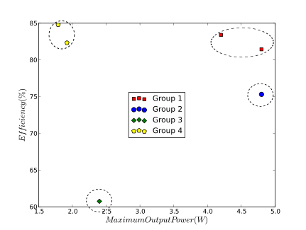
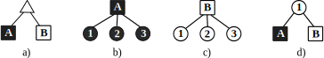

Figure 2.4: Proposed steps to the top-down methodology
Universidad Politécnica de Madrid
Escuela Técnica Superior de Ingenieros
Industriales
Design and Optimization of Power
Delivery and Distribution Systems Using
Evolutionary Computation Techniques
Tesis Doctoral
Leonardo Laguna Ruiz
Master en Electrónica Industrial, Universidad Politécnica de Madrid
2012
Departamento de Automática, Ingeniería
Electrónica e Informática Industrial
Escuela Técnica Superior de Ingenieros
Industriales
Design and Optimization of Power
Delivery and Distribution Systems Using
Evolutionary Computation Techniques
Autor
Leonardo Laguna Ruiz
Master en Electrónica Industrial, Universidad Politécnica de Madrid
Director
Roberto Prieto López
Doctor Ingeniero Industrial por la Universidad Politécnica de Madrid
2012
Nowadays computing platforms consist of a very large number of components that require to be supplied with different voltage levels and power requirements. Even a very small platform, like a handheld computer, may contain more than twenty different loads and voltage regulators. The power delivery designers of these systems are required to provide, in a very short time, the right power architecture that optimizes the performance, meets electrical specifications plus cost and size targets.
The appropriate selection of the architecture and converters directly defines the performance of a given solution. Therefore, the designer needs to be able to evaluate a significant number of options in order to know with good certainty whether the selected solutions meet the size, energy efficiency and cost targets.
The design difficulties of selecting the right solution arise due to the wide range of power conversion products provided by different manufacturers. These products range from discrete components (to build converters) to complete power conversion modules that employ different manufacturing technologies. Consequently, in most cases it is not possible to analyze all the alternatives (combinations of power architectures and converters) that can be built. The designer has to select a limited number of converters in order to simplify the analysis.
In this thesis, in order to overcome the mentioned difficulties, a new design methodology for power supply systems is proposed. This methodology integrates evolutionary computation techniques in order to make possible analyzing a large number of possibilities. This exhaustive analysis helps the designer to quickly define a set of feasible solutions and select the best trade-off in performance according to each application.
The proposed approach consists of two key steps, one for the automatic generation of architectures and other for the optimized selection of components. In this thesis are detailed the implementation of these two steps. The usefulness of the methodology is corroborated by contrasting the results using real problems and experiments designed to test the limits of the algorithms.
Hoy en día las plataformas de cómputo consisten de un gran numero de componentes los cuales requieren diferentes niveles de voltaje y potencia. Incluso una plataforma pequeña como, un teléfono portátil, puede contener más de veinte cargas y reguladores de voltaje diferentes. Los diseñadores de los sistemas de distribución de potencia para estas plataformas necesitan ser capaces de proveer, en un tiempo muy corto, la arquitectura de potencia adecuada que optimice el desempeño, cumpla con las especificaciones eléctricas así como los requerimientos de coste y tamaño.
La selección adecuada de la arquitectura y los convertidores define directamente el desempeño de la solución dada. Por lo tanto, el diseñador necesita ser capaz de evaluar un número grande de opciones con el fin de saber con mejor certeza si la solución seleccionada cumple con los objetivos de tamaño, eficiencia y coste.
La dificultad de seleccionar la solución correcta se incrementa debido al hecho de que existen un gran número de productos de diferentes fabricantes usados para la conversión de energía. Estos productos van desde componentes discretos (para construir convertidores) hasta módulos completos para la conversión de energía que usan diferentes tecnologías de manufactura. En consecuencia, en la mayoría de los casos no es posible analizar todas las alternativas (combinaciones de arquitecturas y convertidores) que se pueden construir. El diseñador se ve forzado a seleccionar un número limitado de componentes con el fin de simplificar el análisis.
En esta tesis, con el fin de resolver las dificultades previamente mencionadas, se propone una nueva metodología para el diseño de sistemas de potencia. Esta metodología integra técnicas de cómputo evolutivo lo cual hace posible el análisis de un gran número de posibilidades. Este análisis exhaustivo ayuda al diseñador a definir de una manera muy rápida el conjunto de mejores soluciones y seleccionar entre ellas las que presentan un mejor compromiso en desempeño de acuerdo con la aplicación.
La metodología propuesta consiste en dos etapas: la generación automática de arquitecturas y la selección optimizada de componentes. En esta tesis se detalla la implementación de estos dos pasos. La utilidad de esta metodología se corrobora contrastando los resultados obtenidos usando problemas reales y experimentos diseñados para poner a prueba los algoritmos.
The future cannot be predicted, but futures can be invented.
Dennis Gabor
Computers are becoming more powerful every day.
However, the reality has changed from what the science fiction told us in the past decades. In the past, it was very clear that the key was to produce a powerful computer able to perform all the calculations that we require; a single super-computer with an unimaginable computational power, capable of reasoning further than humans. The reality is that there are technological challenges that we need to face before dreaming of that. One of those challenges is supplying energy to these computers.
Science fiction books have told us how in the future computers and energy sources will be like. However, they do not provide us with a clue about how the energy conversion technology will be on those days. Maybe in that future, researchers have already found a way of transforming the energy without consuming it. Meanwhile, it is time for us to fix the mistakes that we have made in the past.
Some years ago, energy efficiency was not a priority. Engineers were busy trying to make the things work, and they assumed that the energy will be there when the time comes. In most of the block diagrams (describing the behavior of a system), the power system was not even part of the diagram. Some people realized that there could be environmental benefits in making the power systems more efficient. But by that time, the environment was not a priority. Therefore, they had to prove that there could be also economic benefits in energy saving.
New problems have emerged. The single-unit super-computer has split into millions of smaller interconnected entities. We have PCs (Personal Computers) capable of doing very complex tasks in the commodity of our home. Each of these computers consumes a small fraction of energy, but because there are millions out there, they represent a significant impact.
These PC have split also into a big variety of smaller groups called netbooks, cellphones, smartphones, MP3 players, etc. These devices are not static in our homes; we can carry them with us every day. Every time the computing units change, the paradigms also change and we have new problems to face.
We want the computers to be cheaper, smaller, faster, lighter and cuter; simply better. And to achieve that, we need to learn how to make a better use of the things that we have. It could be good to slow down the development of new fancy products, and focus all our effort in doing the things better. Focus our efforts in design optimized systems considering as first priority improving our quality of life. Our next concern should be improving the “life-time” of the computing devices; this will bring both ecological and psychological benefits.
Contradictorily, commercial applications require that the products are developed in a very short time. And many cases it is necessary to sacrifice an excellent feature that may improve the device life-time or energy efficiency, because it costs more money and the sells will be affected. Companies have to fight hard in order to be competitive and survive.
Despite the technological wars, the massive production of consumer products, like MP3 players, smartphones and videogames, has brought good things1 to our lives. For example, the industry of videogames has driven the manufacturers of visualization technology to develop low cost solutions. These low cost visualization technologies have been used in many medical applications that are saving human lives.
There is no evil in technology, only ignorance. And even when many science fiction authors have imagined how the society will shaped by the technology in a far future. We don’t know how each small step that we achieve will affect us, neither how many stages we have to pass before becoming a society full of prosperity.
Simplicity is a great virtue but it requires hard work to achieve it and education to appreciate it.
And to make matters worse: complexity sells better.
Edsger W. Dijkstra
Nowadays computer aided design is a necessity in most areas of engineering. Every day we tend to make more complex designs1 and we require simpler tools that help us achieve our tasks. In some areas of electronics, like design of digital systems, it is practically impossible not using a computer and designing system with a common complexity.
In order to handle this complexity, researches have been creating new perspectives that help us see the problems in a more friendly way. In the case of electronics, around the seventies the SPICE simulator was created. This simulator has played an extremely important role in the design of electronic systems. The idea behind SPICE is to simulate the final implementation of a circuit. For that purpose, it provides us with “virtual” components that we can interconnect and let them interact. The result is a very accurate simulation of the circuit behavior.
SPICE is a tool for simulating the final implementation and is not meant to replace the calculations needed when designing a circuit. SPICE can be considered rather a verification tool than a design tool. In the design of power converters SPICE is widely used because it is possible to reproduce the behavior of the switching semiconductors. However, these simulations may take a long time what makes very difficult to design a power converter using only SPICE.
In the area of design tools for electronics, we can find a large variety of tools that solve specific problems. One good example of how to solve a complex problem by following a methodology is the design of analog filters. For example, for tools to design analog filters we have FILTER-DESIGNER from TI [Texas Intruments, 2011], FilterLab from Microchip [Microchip, 2011] and FilterCAD from Linear Technology [Linear Technology, 2011] to mention a few. By using these tools, a simple way to design an analog filter will require (at least) three steps:
Following these steps will maximize the chances of succeeding.
These three steps can be considered a top-down methodology. In the beginning of the design we have only the specifications. Using these values as input, the filter design tool will suggest us an appropriate filter structure and the components that we should use. If we are satisfied with the solution, we can concretize the problem and start with the implementation into an electrical simulator. The electrical simulator will use more detailed models. This will help us to determine if we may have other problems like saturation and distortion. Once we are satisfied, we can concretize the model further and implement the real circuit.
Using top-down methodologies has many advantages when designing large systems. In the area of computer science, software complexity has been a problem since the seventies. Software was becoming so complex that it was hard to develop and maintain. Experts realized that they needed better tools (programing languages, editors, etc...) and better methodologies (based on paradigms like structured programming and object-oriented) [Schach, 2007].
In the area of power electronics, complexity of the designs is also increasing. Power supply systems are evolving from a few converters connected to dozens. This increase in the complexity is an effect of the evolution of the systems demanding energy. Power systems are becoming more distributed, consisting of many converters supplying energy to a large number of loads. This makes more difficult to the designer achieving the right power system design.
Manufacturing and construction industries originated what is called the “waterfall model”. This model specifies a series of steps that we need to follow in order to deploy a product. The typical steps are the following: Requirements, design, implementation, verification and maintenance (see Figure 2.1). The name waterfall comes from the fact that, after finishing one step, we cannot go back; waterfalls flow in only one direction. In many industries, if we need to return to a previous step, for example from implementation to design, the cost that it implies may be prohibitive.
In other industries, like software, changes are less expensive. For that reason, modified approaches have emerged. Each step we can acquire knowledge, we can return one step and feedback that knowledge in order to improve our design. This approach is shown in Figure 2.2.
In industries of electronic products, performing changes once the board is implemented are very costly. For that reason we need to be sure that the design we have selected satisfies all the requirements and is optimal. For that purpose we use electric circuit simulators like SPICE.
It is very important to use the appropriate tools. When we are designing a power converter the main concerns are:
In order to guarantee these two points, the designer should perform a detailed analysis of the converter. The designer needs to know in detail the behavior of each current and voltage in the components. The most effective way of knowing that information is through simulations. However, contrary to common belief, simulations are not for free. Building a simulation model and running it consumes time and money. We can introduce the concept of the Efficiency of Simulation as follows: the more usable information we obtain over the time we spent, the more efficient a simulation is.
|
| (2.1) |
To exemplify, 3D finite element simulations (FEA) of magnetic components may take many hours to complete. This makes the analysis of many options inefficient since we have to spend a long time simulating each possible solution. In order to make efficient FEA simulations, we need to design our component by using other methods, and using the FEA simulator only as a validation tool.
The execution time of a model defines the feasibility of using a simulator as a design tool or as a validation tool. Power supply systems are comprised of more than one converters and loads. That make unfeasible using SPICE like tools to design a complete power supply system.
In the following section the main problem treated in this thesis is presented.
In engineering, designing optimal systems considering more than one objective is a complex task to achieve without the use of computers. Consider as an example the optimization of a power converter in which we want to select the appropriate inductor, switching frequency and semiconductors in order to maximize its efficiency and reduce its size. The first thing that we need to do is defining equations for efficiency and size that depend on the parameters to optimize. Once we have the equations, we have to calculate these values for different options of semiconductors, switching frequency and inductor values. When we have the results, we need to determine which of those solutions presents minimum losses and minimum size.
Deriving the equations for efficiency and size is a complex task that can be the topic of a complete PhD thesis. In addition, in order to have a degree of certainty that our solution will really be optimal, we need to test a wide range of components.
This same complexity is translated to the design of power systems. If we want to design a system comprised of more than one converter, the difficulty of the problem may grow to the point in which is completely impractical to use the same models, methods and simulator used in the design of converters. Consider the design of a power system for a server computer. This type of platforms requires energy supply to one or more processors with multiple cores, memory banks, hard drives and many other peripherals. We need to define new methods to handle complexity.
One way of simplifying is to consider the power converters as building blocks. This way we can use the converters without knowing the precise behavior of each component inside it. This simplification allows the designer to focus on optimizing the most important characteristics of a power system:
Using building blocks like commercial and pre-designed converters makes the optimization process simpler. However, creating an optimal design is still challenging. The main difficulties that the designer will find are the following:
Some manufacturers like National Semiconductor have created tools like WEBENCH Power Designer [National Semiconductor , 2011] to solve part of these problems. This tool is able to design power systems using their own products. This tool is able to find solutions for regular sized architectures and uses a weighted approach in order to classify solutions.
The main disadvantage is that, for commercial reasons, only National semiconductor products can be used. This can be very constraining since manufacturers may not want to use only one type of products in their designs. In addition, we could find better solutions by combining the best products from different converter manufacturers.
It is possible to define a new methodology to help the power system designer to make the decisions that have more impact to the cost, size, and energy losses of the power system. The designer will be able to determine:
These results can used by the designer in different ways. We have mainly the following cases:
This methodology in order to be useful needs to fulfill the following characteristics:
In order to create a tool better than the existing ones, we need to provide:
Designing a power system requires a different number of steps depending on its type. In Figure 2.3 we can observe a visual representation of a top-down methodology used for the design of a power system. Following this approach, we have to define the specifications at first instance (level 1). Based on those specifications, we have to create a design (level 2), and if we have the appropriate simulation technologies, we can perform a system-level validation (level 3). At this step, if the design is not satisfactory, we can always return to level 2 and create a new one.
The tasks that the designer has to perform in level 2 are not well defined because they depend on the designer’s preferences, experience and type of system to design. However this step is fundamental. The designer has to be sure that the solution he is selecting is the most appropriate before continuing with the following step.
The proposed solution splits the design level into two intuitive tasks (see Figure 2.4): definition of the architecture and selection of converters. For each task we have to provide an adequate design and validation tool that can assist the designer through the whole process.
One of the biggest advantages is that, by using these design and validation tools, the designer will be able to create a reliable design in a more efficient way. We can observe an analogy of this process in Figure 2.5. Without using the adequate tools during the design task, we are taking a slow an long way ( see Figure 2.5.a). The proposed approach provides two shorter and faster routes that the designer can take repeated times until he find the adequate solution (see Figure 2.5.b).
In order to create the methods and tools necessary to fulfill the proposed solution, we need to solve the following problems:
The architecture search and component selection algorithms should have the following characteristics:
The work presented in this document has been constrained to the design of power supply systems comprised of DC/DC converters. Nevertheless, the methods can be applied to AC systems since the methodology does not rely on the modeling approach used. The only requirements for the models are that we should be able to calculate the energy losses, size and cost of the power architecture.
The accuracy of the results obtained depends directly in the accuracy of the models used. If the designer uses incorrect information to create its models, he will obtain incorrect results. Capturing models from converters is a critical step, hence we have to provide the adequate tools to simplify and reduce the chances of making mistakes.
In the case of size and cost calculation it is not important to obtain an accurate value. What is important is to obtain a relative value that allows us to determine whether one option is more expensive or bigger than other.
In the following section we will present a set of ideas that will define the way this work is performed.
This section presents the ideas considered to build the scientific paradigm used in this thesis. The main purpose of describing them is to help the reader to understand the motivation, the methods and the interpretation of the results presented in this document. This section consists of three parts. In each part one idea is presented by using a series of examples trying to clarify its importance.
Learning has a cost, but ignorance cost even more. This idea has been explored in economics for a long time. Researchers have found this relationship in a very simple way (figure 2.6): the more knowledge we acquire in early stages of the design, the more flexibility we have and less money is spent [Fabrycky and Blanchard., 1991].
Buildings cannot be designed on the run. Consider the following example. When designing a bridge, it is necessary to perform many simulations in order to know how it will behave under different conditions. That was the case of the famous Tacoma Narrows bridge [Prelinger Archives, 2011]. The original Tacoma Narrows bridge (opened in July 1940) collapsed because the vibrations produced by wind, what made the bridge resonate in its natural frequency causing its destruction. At that time, that phenomenon was unknown. Since then this type of analysis is performed in big structures and no one will build it before being completely sure about how will it behave.
In electronics there are many known effects that we have to test before being sure that our design will not fail. By using the appropriate tools we can simplify this task. With the proposed methodology we try to help the designer to acquire more knowledge about its system. This will provide him more flexibility as [Fabrycky and Blanchard., 1991] states and a reduction in the design time and cost.
There exist persons capable of performing very complex calculations in a fast way using only its brain power. An alternative to all of us that do not have that ability is to use a computer equipped with the appropriate tools. Up to this year (2011), computers cannot be considered intelligent. However, computers can behave in a way that may appear intelligent. Playing chess is an activity associated with intelligent people. But since 1997 computers have proven to be smarter than the best human players. The most famous case is the match between the World Chess Champion, Garry Kasparov, against the computer Deep Blue [Hsu, 2002]. After that, computers have shown in repeated occasions that they are better than humans in playing chess.
A computer with the adequate programs can perform many tasks faster than humans. For that reason is important to distinguish which are the activities that require human intelligence and which can be performed in an autonomous way by the computer.
In this thesis want to create the necessary methods, tools and programs that can turn a computer into a fast calculation machine designated to create power systems. We are not trying to compete against human designers, but to help them to make better designs.
Like Voltaire said: “Doubt is not a pleasant condition, but certainty is absurd”. Very often, (as engineers, researchers or scientist) we tend to forget these wise words. Lack of information can make us think that we have a good solution, since we do not have reference points. Our level of certainty can be high by ignoring other possibilities. On the other hand excess of information can overwhelm us making us hard to define a good solution. As designers we have to avoid falling in any of these conditions. We can achieve that by using appropriate methodologies and measuring mechanisms; using a good strategy.
Take as example the problem of the “Fog Creek Programmers” (Posted on April 16, 2010 [Tech Interview, 2010]). In this problem, an assassin lines 100 programmers and puts on each of them a hat that can be red or blue (50 red and 50 blue). They can’t see their own hats, but they can see the hats of the programmers in front of them. The assassin starts with the programmer in the back and asks him “What color is your hat?” if the programmer gives an incorrect answer, the assassin kills him and continues with the next in line. The problem consist on determine how can we save most of the programmers. Since we don’t know how is going the assassin to put the hats, we do not have certainty that we will save them all. The only thing that we can do is to define a good strategy. The simplest strategy is to tell the programmer to answer always the same color, that way we can save the 50% of them. There exist other strategies that can be used to save more programmers but we are not going to cover them in this document.
In this work we try to increase the level of certainty by using a good strategy. This strategy is the central idea of the proposed methodology.
This thesis is organized in three parts:
Background: The main objective of the chapters within this part is to present a summary of the methods and techniques necessary to understand the foundations of this thesis. In these chapters we present the state of the art and works related to metaheuristic optimization algorithms and behavioral modeling.
New Techniques for the Automatic Design of Power Supply Systems: in this part we present the proposed methods for the automatic search of power architectures and converter selection. This section is split into two chapters, one focused on the architecture generation algorithms and other focused in the converter selection. Each chapter contains a validation section where the experimental results are displayed. This part contains the central work of this thesis.
Application Example of the Presented Techniques: this part contains a more practical validation of the methods proposed. We have included examples of real power. These examples were created with the purpose of covering the main design cases.
All models are false but some models are useful.
George E. P. Box
This chapter presents a review of the modeling methods that can be used to perform fast simulations of power systems. This chapter starts describing the key factors that affect the execution time in complex models and introduces a few techniques that we can use to reduce this time.
The second section is focused on the modeling techniques that will allow us to characterize the energy loss of a power converter. Once we are able to calculate the energy loss of a converter, we can calculate the efficiency of a complete power architecture. In the third section it is presented the modeling methodology used to calculate the cost and size of the architectures,
In this section is presented a summary of the key points that need to be considered in order to perform fast and effective simulations. The time that a simulation of dynamic systems takes to complete (execution time) depends mainly on two factors (Figure 3.1):
These two factors are described with more detail in the following subsections.
Simple models can be solved by simple methods. Complex models, on the contrary, may require sophisticated (and slower) methods to achieve a solution. The model complexity can be divided into two categories: the number of elements that contains the model, and the complexity of equations. The number of elements (in most simulators) directly defines the number of equations that the simulator has to solve. Solving a system with a large number of equations implies performing a large number of calculations what is reflected in a slower simulation. One option to make simulations faster is to reduce the number of equations. To that end, some simulators try to reduce the number of equation by symbolically simplifying the described model before creating its final representation. Some examples of these simulators are Modelica language [Modelica Association, 2011] simulators. In this type of simulators, the model is preprocessed in order to obtain a representation that is easier to solve. Consider the example on Figure 3.2. Figure 3.2.a contains seven resistors while the circuit in Figure 3.2.b contains only one. The model with seven resistors will take more time to simulate1. If we are interested in knowing the current that the voltage source provides, we can simplify the circuit with seven resistors to the circuit with one. That way we will obtain a circuit that simulates faster and we still obtain the information that we need.
When the model contains only linear equations, solving it requires simpler methods, like Gaussian elimination. However, if the model is nonlinear, it requires using methods that are computationally more expensive, like Newton-Rhapson. In order to simplify the simulation of models with complex equations, we can use piecewise linear models. The model of a diode is given by the following equation:
|
| (3.1) |
In this equation we can see a nonlinear relation between the voltage (V D) and the current (I) of the diode. However, in many cases, like the simulation of power rectifiers, the ideal model of a diode is good enough to provide useful results. The equations of the ideal diode are the following:
|
| (3.2) |
|
| (3.3) |
The second factor that defines the execution time is the number of calculation points. The number of points depends on two parameters: the simulated time and the dynamic of the model. It is important to notice that we are using two names that are similar but define different concepts. The simulated time is the virtual time that is being simulated using the model. Nevertheless, the execution time is the time the computer takes calculating the results. For example, the typical simulated time of a power converter is around milliseconds, but the actual execution time can be several minutes.
The dynamic of the model defines how fast the model variables change. If the variables never change, the systems is static and it is necessary to calculate only one point. A model with very high dynamics (high frequencies) will require more calculation points than a model with low dynamics2.
If a model has low dynamics, it is possible to make the simulation very fast. On the other side if the model has high dynamics (high frequencies) and a long simulation time, the simulation will take a lot of time.
By a rule of thumb, it can be stated that a model is faster when less details are simulated (Figure 3.3). If we want to improve the simulation speed, it is necessary to lose some details of the model by making some variable negligible. This led us to lose some accuracy, but this is not bad in all cases. In order to obtain a fast model, it is necessary that the model simulate only the required information according to the test.
In power electronics the typical techniques to make faster simulations are:
These two techniques can improve drastically the speed of a simulation. However, when simplified semiconductor models are used, the information lost is what happens when the semiconductors switch. Averaging techniques drop completely the information produced when the converter change of state, yet this models are particularly useful when we want to design control loops..
Other technique to obtain fast simulation models is the behavioral modeling. The main idea of behavioral models is to define a simpler model that mimics the input-output behavior of the real system during a certain number of tests. This simpler model may reduce both, the model complexity and the number of calculation points.
The application of this technique to the simulation of power systems is presented in next section.
The application presented in this document requires modeling and simulation approaches that enhance the following characteristics:
Usually, capturing the model of a converter is not an easy task. This is mainly because the typical modeling approaches require a detailed knowledge of the converter e.g. the topology and the values of the components. These modeling approaches are not suitable for this application because capturing a large number of converters can be time consuming and error prone. In addition, averaged models are still complex and slow for this application.
Behavioral models are the best choice for this application. The main reasons are the following:
These models also present limitations. The first one is that the models are developed to behave in a specific way under given conditions. For example, if we do not include the protections of the converter, the model will not turn-off when an over-current occurs. Therefore, the user should be careful in order avoid any misunderstanding of the simulation results.
Typical power supply architectures used in mobile devices may include the following components:
Each of these elements has different levels of interaction. Depending on the level of detail modeled, the physical effects that involve may acquire more or less importance. For example, when the losses are calculated, the effect of the protections and EMI filters is minimal.
The Table 3.1 shows a summary of the different components of a power architecture and the modeling level at which its effects cannot be diminished. Depending on the information that we want to know about the system, a different modeling level may be more suitable.
| Modeling Level | Converter | Protections | Filters | Sources | Loads |
| Static | ⋅ | ⋅ | ⋅ | ||
| Dynamic | ⋅ | ⋅ | ⋅ | ⋅ | |
| Event-Driven | ⋅ | ⋅ | ⋅ | ⋅ | ⋅ |
| High Frequency | ⋅ | ⋅ | ⋅ | ⋅ | ⋅ |
In the current application, it is necessary to calculate the cost, size and losses of the power supply system. Therefore, it is possible to calculate these three parameters without entering to the full detail of the converter behavior. As mentioned in the previous section, by reducing the level of detail it is possible to obtain simple and fast models that recreate the physical effects of importance. In this case, we are taking into account the following considerations:
These two considerations reduce the requirements of the models. We can obtain all the things that with need to calculate by using static level models. Other consequence is that we can model the protections of the converter at a functional level. This means that if the converter operates at steady state, no protection should be on. On the other hand, if a protection is on, even in a steady state simulation, this means that the converter is not appropriate and should not be used.
Considering that we want to simulate the power architecture at a static level (steady state), it is possible to simplify the problem by grouping the effects of the filters and protections. This lead us to the conclusion that we only need to create models for the converters, the loads and the sources.
In the following subsections are presented the details of how to model these components.
The behavioral modeling of DC/DC converters has been presented by [Oliver, 2007]. This model is based on the Wiener-Hammerstein structure (Figure 3.4). The structure consists of three blocks that can simulate complex dynamic and nonlinear behaviors. The input and output linear network is used to simulate the dynamic behavior, in the case of a power converter, these block simulate the inrush current and output voltage transient response. The static block simulates the nonlinear power transference of a converter. More details about the complete features of these models can be found in [Prieto et al., 2007, Oliver et al., 2008b, Oliver et al., 2008a].
In this application it is only used the static model since transient behavior and EMI is negligible at this level of abstraction. Therefore, the behavioral model of a DC/DC converter is simplified to the following equations:
|
| (3.4) |
|
| (3.5) |
Using equation-based modeling, we can create complex models by connecting small models. Each small model has its own equations and new equations are generated each time we connect one of its pins. This approach allow us to represent me models as typical electric components. Figure 3.5 shows the equivalent electric model to equations (3.4) and (3.5).
It can be seen in equations (3.4) and (3.5) that the function losses and vdrop may depend in variables as input voltage, output voltage, output current and temperature. Obtaining these two functions can be quite challenging because they represent a five dimensions surface. These two functions can be simplified depending on the information available or the type of converter. In order to simplify these functions the following assumptions are considered:
Taking into account the previous points, we can approximate the model losses and vdrop of a typical DC/DC converter by a very small model, without a significant loss in accuracy:
|
| (3.6) |
|
| (3.7) |
In equation (3.6) the losses are approximated by a polynomial function. Figure 3.6 shows a comparison between the modeled losses of a converter using a polynomial and the actual measurements. The term ro in equation (3.7) represents the output voltage drop due conduction. This value in some cases may be negligible.
The behavior of linear regulator can be approximated using equations (3.8) and (3.9).
|
| (3.8) |
|
| (3.9) |
First it is assumed that the linear regulator has a perfect regulation, that is the reason why in equation (3.9) the voltage drop is 0. In addition, the losses are practically defined by voltage difference and the output current (equation (3.9)).
In most commercial modules it is possible to use one specific converter with more than one input voltage and output voltage configurations. In these cases, we recommend to create more than one model to represent each behavior of the converter. Usually the manufacturers provide efficiency curves for different input/output voltages. From these efficiency curves it is possible to obtain models with a very good level of accuracy for each of these configurations.
If we require models with a higher level of complexity, we can obtain the losses and vdrop function by using other analytic methods. [Elbanhawy, 2006] and [Das and Kazimierczuk, 2005] present two approaches based on the calculation of the losses by individual parts: switching, conduction and circulating energy. These approaches can be used specially on ad-hoc designs before a prototype is constructed and measured.
Until this point, we have presented only the electrical model of the losses. However, it is possible to add other features to this model, for example, equations to determine if the converter is operating outside its maximum specifications and other characteristics like the output impedance. It is possible to detect if a converter is providing more output power than its maximum defined by adding the following equation to the model.
|
| (3.10) |
In equation (3.12) the function above is defined as follows:
|
| (3.11) |
Therefore, the security value of a converter is 1 if the output power (iout vout) is greater than the maximum output power of the converter.
The value of area and cost of the converters are constant. Thus it is very simple to model with trivial equations this behavior (equations (3.12) and (3.13)).
 | (3.12) |
|
| (3.13) |
To summarize, in Tables 3.2, 3.3 and 3.4 are presented the necessary equations to model typical converters and linear regulators.
| vin � iin � vout � iout � losses�iout� |
| vout � voutnom � vdrop�iout� |
| security � above�iout � vout,MaxOutputPower� |
| area � ConverterArea |
| cost � ConverterCost |
| losses�vin,vout,iout���vin � vout�� iout |
| vdrop�iout�� 0 |
| losses�iout��Pi�0kai � iouti |
| vdrop�iout�� ro � iout |
In the following section are presented the models of the loads and sources. These models are developed with the same objective of obtaining very small and fast models.
Loads and sources have very simple models. They are based on the electrical model shown in Figure 3.7. When the voltage source is a battery, we can consider Battery Capacity as a parameter. We can use this parameter to estimate the autonomy of the system. We are not considering at this simulation level effects like aging of the battery and output impedance. The voltage source model consists of the following single equation:
|
| (3.14) |
The behavior of the loads can be more complex. Nowadays platforms implement complex power management schemes that make hard to define a deterministic behavior for the load. For example if the load is a processor, it may perform very aggressive variations of its consumed power. In this case the power consumption can be characterized by its probabilistic behavior. This kind of behavior is not possible to capture in a static electric model. The evaluation of performance of the power supply system due the probabilistic behavior of the loads is presented in the following section. However, we still need a simple electrical model for the loads. We can describe the model of a load in two ways: as power or current consumers. The equations of a power and currents consumers are (3.15) and (3.16) respectively.
|
| (3.15) |
|
| (3.16) |
Once we have defined these simple models, it is possible to create a model of a complex architecture and evaluate its performance with a good accuracy and in a very short time.
In this application, as stated before, a power architecture is evaluated considering three metrics:
The real cost of a platform is very difficult to calculate because many variables must be taken into account, for example component storage cost and engineering cost. Nerveless it is possible to calculate the cost of the components used to build the architecture. Using this approach for cost calculation it is possible to differentiate when a power architecture is more expensive than other.
In the case of size calculation, if we want to know the real size of the platform, we will need to design the real layout of the platform. As in the cost calculation, the calculated area is relative. This calculation approach is good enough to know the size difference between two power architectures. The equations to calculate the cost and size are the following:
|
| (3.17) |
|
| (3.18) |
In this equation Cn represents each of the k converters of the architecture .
We can calculate the power losses by simulating the electrical circuit of the complete architecture and obtaining the difference between the input and output power. This simulation requires only the static behavior; this means that no transient characteristic of the systems are considered. In order to avoid incorrect results in the simulation the following conditions are considered:
In previous section, it was shown that each converter has defined a variable called “security”. This variable has a value 1 if the converter is operating outside its specifications. Using these values, we are defining other variable that alerts if the architecture utilizes incorrectly a converter. The equation is the following:
|
| (3.19) |
It is possible to detect and discard invalid architectures by using this value.
Other important consideration (as mentioned before) is that some loads may present high dynamic behavior. When the designer have this information, it is possible to calculate the average losses of the system. There are mainly three approaches (Figure 3.8):
In Figure 3.8.a is shown the current waveform of a load. Based on this waveform it is possible to obtain a representation of the instantaneous current values and its probability. The first approach is the calculation at maximum output power (Figure 3.8.b). In this case, the loads are set to its maximum power and the total losses are calculated. This operating point is important because it assure the designer that the power system can provide the required power without exceeding the limits of components. The main disadvantage of designing the power converter for this operating point is that the system is optimized only for that point. Therefore, if there is a converter that presents better performance in light load this advantage is not considered.
If we have available more detailed information about the load behavior, it is possible to characterize a few discrete states and its probability (Figure 3.8.c) and obtain an average value for losses.
|
| (3.20) |
In Equation (3.20) s represents the state, lossess the losses of the state and Ps the probability.
We can make a rough approximation of the average losses in cases where detailed information of the load behavior is not available. We can approximate the losses by calculating different points within a range of operation and averaging all the results. In this case, we are assuming that each calculation point has a similar probability. This case is shown in Figure 3.8.d.
The decision of the approach used will depend completely on the information available about the loads. The main drawback of the averaging approaches is that if the number of loads is very large, and the discrete states for each load is also large, the total number of states for the system may be excessive making unfeasible to calculate the average losses for all states.
This chapter presented the methodology employed to obtain very simple and useful models for the typical components of a power architecture. These models allow us to calculate the energy efficiency, size and cost of a power architecture in in a very fast way since the models consist of simple equations. We use an equation-based approach; this allows us to connect small models (through equations) and create complex models of electric circuits.
In order to calculate the cost and size of and architecture, we use a measurement that provides a relative value among the architectures. For the cost, we calculate the cost of the components; and for the size, we calculate the total size.
This is one of the possible modeling/simulation alternatives that we can employ. Nonetheless, it is necessary to notice that the architecture generation and component selection methodologies (that are presented in part two) do no rely on the approach used to calculate the performance criteria. These methodologies rely on the calculated values, not in the method used to calculate them. This gives us the flexibility of using any modeling methodology that we want.
Experience can be merely the repetition of same error often enough.
John G. Azzopardi
This chapter presents an introduction to different algorithms used in metaheuristic optimization. The objective of this chapter is to help understanding the underlying principles of these techniques.
Four different algorithms are explained, Ant Colony, Harmony Search, Simulated Annealing and Genetic Programming. These algorithms have been used as reference for the algorithms proposed in this document. This chapter also includes the basic theory used in optimization algorithms with more than one objective.
The term metaheuristic has been adopted to describe the methods that optimize a problem by iteratively trying to improve a candidate solution with regard to a given criteria. The term “Heuristic” come from Greek and means “find” or “discover”, but it is used to describe techniques that find solutions by accumulating experience. The term “Meta” can have different meanings, for example “after”, “beyond”, “with”, “adjacent” or “self”. One of the interpretations is “beyond heuristics”. The main idea in these techniques is to be able to create a better solution based on existing ones; based on experience.
Contrary to mathematical optimization methods, these techniques can be used to solve optimization problems with discontinuous parameters and without gradient information. Metaheuristic techniques have been used to solve a wide range of problems that cannot be solved with traditional mathematical optimization techniques. Some areas of application are:
The basic principle of operation of these algorithms is to create a basis of knowledge (or experience) from which a new solution is proposed. This new solution is evaluated, and according to the results, the base of knowledge is updated. This procedure is illustrated in Figure 4.1. If the same steps are performed many times, the accumulated knowledge should be enough to easily find the optimum.
Each of these algorithms has a specific way of storing the knowledge, creating new solutions and updating the knowledge. For example, the category of evolutionary algorithms uses concepts inspired by the evolution theories of Darwin. The knowledge is stored as a set of solutions (individuals) called population, and the different individuals of this population are crossed (combined) in order to obtain new solutions. These solutions are evaluated, and the population is updated by selecting the fittest individuals. These process is repeated for many generations and at the end the individuals within the population are the ones that have the best characteristics.
Genetic algorithms create new solutions (offspring) by crossing the characteristics of two individuals (parents). For example, if we are optimizing a vector of parameters, the crossover will pick some of the values from every parent to create the offspring. If the offspring has a good performance, it will survive for the next generation. More details of generic algorithms can be found in [Weise, 2009].
Other algorithms that follow these same steps (but do not use the metaphor of genetics) are classified as Evolutionary Computation algorithms. This is the case of Ant Colony Optimization [Dorigo and Blum, 2005] and Harmony Search [Geem, 2009], which will be explained in later sections.
Metaheuristic algorithms can help obtaining solution for complex combinatorial problems. The main disadvantage of these algorithms is that there is no guarantee that the global optimum will be found in all cases. This is the main reason why there is distrust by certain group of users against the use of this type of algorithms. But as will be presented in chapters 5 and 6, these techniques produce very good results.
In the following sections three algorithms from the family of “nature-inspired” algorithms will be presented. Ant-Colony algorithm is inspired in the behavior of ants seeking a path between the food and their colony. Harmony search is inspired in the music composition process. Simulated annealing is inspired in the annealing process in metallurgic industry. Genetic programming (similar to genetic algorithms) is inspired in the natural selection process.
Ant colony [Dorigo and Blum, 2005] is part of swarm intelligence algorithms. The main characteristic of these algorithms is that the knowledge (or intelligence) is distributed in a group of individuals that work in cooperative way. The ant colony was first developed with the idea of searching paths in a graph.
A real ant searching for food, starts to move in a random path until it finds food, and then the ant returns to the colony. All ants leave a trace of pheromones where they have walked. These pheromones are reinforced when other ants follow the same path, but also the pheromones evaporate as time passes. If an ant finds this trace of pheromones, it will be attracted to follow the same path. If the path is a good path, many ants will start to use this path because the amount of pheromones will be higher. In long paths the trace of pheromones is weak what makes it less attractive. After some time, if the source of food is good and the path short, all ants start to use that path between the colony and the source.
In ant colony algorithm this behavior is imitated. The pheromones track is stored in a table that contains the amount deposited in each edge. After each iteration, the amount of pheromones is decreased in order to simulate evaporation.
Figure 4.2 shows an example of how the pheromones are accumulated in three different times during the optimization. Figure 4.2.a shows the pheromones after a few iterations. After a significant number of iterations the pheromones look like in Figure 4.2.b. At the end of optimization, it can be seen in Figure 4.2.c that the pheromones are concentrated in the shortest path.
The most important part of the algorithm is the approach used to create a new solution. An ant (represented with a vertex of a graph) has to make a decision on what is the next path (edge) that it will take. The first proposed algorithm has the name Ant System [Dorigo et al., 1996]. Each edge has a value ω, that represents the probability of selecting that path. This value is defined as:
|
| (4.1) |
Where τn,m is the amount of pheromones in edge n to m and ηn,m is the desirability of the edge. The values α and β are used to control the influence of the pheromones and the desirability respectively. The desirability of an edge is given by the formula:
|
| (4.2) |
where dn,m is the distance of the edge. The probability of an ant to choose a path from edge i to j is given by:
|
| (4.3) |
where the term P�ωi,l� represents the weight of all possible paths from edge I to any other vertex (represented by l). The pheromones on each edge are updated using the following formula:
|
| (4.4) |
where ρ is the evaporation rate, m is the number of ants and Δτi,jk is the quantity of pheromone laid on the edge by ant k. Depending on the success of a more or less pheromones are deposited. The formula is:
|
| (4.5) |
where Q is a constant and Lk is the length of the tour constructed by ant k.
Other systems have been developed in order to improve the performance of the algorithm. Some examples of these systems are MAX �MIN Ant System [Sttzle and Hoos, 2000] and the Ant Colony System [Dorigo and Gambardella, 1997].
In the Ant Colony algorithms the knowledge (or experience) is stored in the pheromone table. This pheromone table contains information about how good a given path has been. New solution are proposed based in this information.
The Harmony Search algorithm [Geem, 2009] was inspired by the observation that the aim of music is to search for a perfect state of harmony. Consider as an example a room full of musicians with detuned instruments. In periodic intervals, each one plays a single note. Based on what every musician hears, he has the opportunity to try other note or change the pitch of it instrument in order to make it sound better in combination with the rest of instruments. If we repeat over and over this process, we will reach one point in which all the instruments are tuned and the musicians are playing notes that have a good harmony.
Harmony Search (HS) algorithm follows an intuitive set of rules to create new solution candidates. The central part of the HS algorithm is the Harmony Memory. Harmony Memory stores a group of solutions and it is analogous to the concept of population in evolutionary algorithms. Harmony Memory is represented as a vector of solution vectors:
|
| (4.6) |
where xn is a solution whose parameters are x1n,x1n to x kn. And f�xn� is the aesthetic value or objective function value.
In Harmony Search algorithm a new solution is built by selecting individual values of each parameter. These new solutions are called improvisations. In the simplest version of HS there are three different operations to obtain a new value and these operations are:
The random selection as its name says, returns a random value (xi) in the range of xi,min to xi,max. This function can be defined as follows:
|
| (4.7) |
where the function random�� returns a value between 0 and 1.
The memory selection operation randomly takes the value of a solution stored in the harmony memory. Memory selection function is defined as follows:
|
| (4.8) |
where HMS is the number of elements of the harmony memory and the function int converts a real number to integer.
The pitch adjust operation takes randomly a value from the harmony memory and performs a slight variation of the value. The function is defined as:
|
| (4.9) |
where bw defined the maximum deviation that the value can take.
Each function has a certain probability of being used. These probabilities are defined by HMRC and PAR. HMRC is the probability of picking a parameter from the harmony memory. PAR is the probability of adjusting the pitch of a value. The improvisation function is defined as:
|
| (4.10) |
These three cases are shown in a simplified way in Figure 4.3. Good values for HMRC and PAR are 0.7 and 0.3 respectively. Moreover these values can be changed during the optimization process.
Basically the way Harmony Search proposes a new solution is by combining all the existing solutions in the memory. It can be considered three level of adjust: large, small and no adjust. Large adjust is the random selection operation, this operation is particularly useful to explore different areas of the solutions space and to escape from local optima. The small adjust is performed by the pitch adjust operation. This small adjust makes a local search in order to get closer to the local optima.
Simulated annealing takes its name from metallurgy. The annealing process consists on heating a metal and then cooling it down with the objective of creating bigger crystals in the structure. A metal with bigger crystals is more resistant and has fewer defects. When the metal is heated, the energy and diffusion rate of the ions increases. This breaks the structure of the crystals, and when the metal is cooled again, the crystals are rearranged to a better structure. The simulated annealing algorithm was developed inspired by that effect [Kirkpatrick et al., 1983].
In the case of simulated annealing it is not defined a specific way about how new solutions are proposed. The algorithm defines a way how the solutions can be selected. Similar to the previous algorithms, simulated annealing works in an iterative way. Each iteration a new solution xn�1 is proposed. Each solution has an energy value that represents how good the solution is. Once the energy en�1 (fitness) is calculated, we can calculate by using the energy of the previous solution (en) a delta value :
|
| (4.11) |
Two cases can occur. If the energy en�1 is smaller than the energy of the previous solution en, or Δe @ 0, the probability of selecting the new solution is 1. If Δe A 0, the probability is calculated in the following way:
|
| (4.12) |
where T represents the temperature. Typically, the value of the temperature is decreased gradually as the number of iterations increases. It can be seen from Equation (4.12) that, when the value of temperature is high the probability of escaping, or selecting the solution xn�1 is high. As the temperature is decreased, the probabilities of escaping are smaller.
[Laarhoven and Aarts, 1987] present many applications of the simulated annealing algorithm. It is also presented a demonstration that simulated annealing presents global convergence if the number of iterations tends to infinity.
Genetic programming (GP) is an evolutionary algorithm used to find computer programs based on the same principle of all evolutionary algorithms. The central part of genetic programming is the representation of computer programs as tree structures. These tree structures are crossed and mutated in order to obtain new trees (programs) that perform a given task better.
Figure 4.4 shows the tree representation of a mathematical Equation. In a similar way, other more complex operations (like loops and conditions) can be represented.
The simpler scheme of GP creates new solutions based on two operations: crossover and mutation. Crossover operation combines two different solutions and mutation performs a modification over one solution. Figure 4.5 shows an example of the crossover operation where two trees are combined into new ones. Figure 4.6 shows the main three cases of the mutation operation: replacement, insertion and deletion. As their names say, these three operations modify the nodes by replacing, inserting and deleting sub-trees.
In some applications to avoid obtaining nonsense programs Grammars are defined. These grammars define a set of rules that the mutation and crossover operations must follow in order to obtain valid trees.
In recent days, genetic programming has acquired more acceptance because nowadays computers are very powerful. The fact of creating a program automatically and run it is easier thanks to the advances in compilers.
These are some of the areas in which genetic programming has been successfully applied [Weise, 2009]:
The concepts of genetic programming have been applied in electronics in the automatic design of hardware. One particularization is the Cartesian Genetic Programming [Miller and Thomson, 2000] that is used to evolve Boolean functions. This has been used to design optimized digital circuits.
Even when real-world optimization problems can be expressed as single objective problems, it is difficult to capture the aspects of all in a single objective. Techniques to achieve multiobjective optimization are very different from single objective and also are more difficult to implement.
In single objective problems it is very easy to determine if a solution is better than other. A solution is better than other if the fitness is closer to the target. In multiobjective optimization the concept is more difficult to define. In order to find optimal solutions, the commonly adopted concept is the one defined by Vilfredo Pareto [Pareto, 1897]. This concept is known as Pareto Optimality. A solution y that consist on a vector of k decision variables is Pareto optimal if there does not exist another x such that fi�x�B fi�y� for all i � 1,...,k and fj�x�@ fj�y� for at least one j. This means that y dominates x if one of its characteristics its better and the remaining characteristics are equal (or better).
This concept is illustrated in Figure 4.7 where each point represents a solution. Each solution has two objectives and the target is to minimize them. Each solution defines a dominance region, and any other solution inside that region is dominated.
The first thing that can be noted in multiobjective optimization is that there does not exists a single optimal solution. On the contrary, there exists a complete set of Pareto optimal solutions. Therefore, the concept of a single optimal solution cannot be achieved on most cases.
There are some considerations to take into account in order to obtain the Pareto front by using evolutionary computations. Since the effectiveness of most evolutionary techniques relies on the concept of combining elements of the population, it is very important to keep diversification in the population.
Multiobjective optimization techniques can be classified into three groups:
A brief description of each approach will be presented in the next subsections.
This approach consists on combining all the objectives into a single value. The most typical aggregating function is the linear sum of weights. In this approach, we need to define for each objective a value that represents its importance; a weight value. The combination of all objectives is calculated a following:
 | (4.13) |
where wi represents the relative importance of the objective i.
Linear sum of weights has the disadvantage that the results are completely dependent on the weight values. Using inappropriate values can result in incorrect or non-optimal results. Other disadvantage is that it is difficult to generate the non-convex part of the Pareto front (the solutions that only minimize a single objective). Nevertheless, there are nonlinear aggregating functions that can be used to overcome this problem. The main drawback is that it is no easy to define an effective aggregating function that works for all problems.
One of the characteristics of a good evolutionary algorithm is that it has to search for the global optima among a wide space of parameters. In order to achieve that, the algorithm should try to keep individuals with very different characteristics. This concept is called “diversification”.
Population-based methods assume that in order to keep the diversity, it is possible to create a sub-population that targets each objective individually. This way the best solutions for a single objective are obtained. These solutions (that are good for a single objective) are combined among themselves with the purpose of obtaining solutions with good characteristics in all the objectives. The main problem of population-based is that this assumption may not be true to all problems. There could be some solutions, that present good characteristics in all objectives, and are discarded because they do not present good characteristics in the individual objectives.
Pareto-based approaches use the concept of Pareto dominance. This allows keeping solutions with a good trade-off among the objectives. There are many algorithms whose main objective is maintaining the diversity of the population. The central part of these algorithms is the way they define the concept of how a solution is better than other. Some of the approaches are based on the following definitions:
A solution can be better than another if:
In addition to these concepts of comparison, these algorithms implement mechanisms to improve the performance and diversification, for example limit the number of Pareto solution in a given region of the space.
Two generations of Pareto-based algorithms are defined. The first one has the characteristic that algorithms use the concepts of niching, fitness sharing and Pareto ranking. The second generation of algorithms introduces the concept of elitism. Elitism tries to keep the diversification by keeping an external population, formed by individuals with good characteristics, and combining them with the rest of the population during many generations. Some of the most popular algorithms of the second generation are:
In the following sections will be presented a brief explanation of these algorithms.
The Strength Pareto Evolutionary Algorithm (SPEA) uses two types of population. One contains only the solutions belonging to the Pareto front, and the second contains a general population. The objective of storing the Pareto front is to preserve the best solutions. On the other side, the objective of storing a general population is to preserve the diversity.
The basic flow diagram of SPEA algorithm is shown in Figure 4.8. The first step of the SPEA algorithm is to obtain all the non-dominated solutions from the population. These non-dominated solutions are combined with the stored Pareto front. If the number of the new Pareto front exceeds the maximum number of solutions, a clustering algorithm is used in order to obtain the most significant members of the Pareto. The next step is to calculate the strength of each individual in the Pareto front. The strength is a value between 0 and 1 that reflects how many individuals of the population a given solution is dominating. The next step is to calculate the fitness of the population. This value is calculated by adding the strengths of each individual belonging to the Pareto that covers the given solution. Once the strengths and fitness values are calculated, a new population is obtained based on the Pareto and the current population. The stronger individuals and the ones with a better fitness have more probabilities of being used.
The SPEA algorithm is especially useful when the optimization variables are continuous or when the number of solutions that belong to the Pareto front is very large. This benefit comes from the fact that SPEA reduce the number of stored solutions by using a clustering algorithm in order to obtain the most significant individual of a group of very close solutions. More information about SPEA can be found in [Zitzler and Thiele, 1998].
The Micro-Genetic Algorithm (Micro-GA) is an approach developed for the improving the performance of the algorithm. The algorithm is based on the concept that it is not necessary to use a very large population in order to obtain good results. Micro-GA divides the population in two types, the replaceable part and a non-replaceable part. From these two populations a very small set of individuals is selected and is used as micro-population. With this micro-population a genetic algorithm is executed with a small number of generations in order to improve the solutions. Using this improved micro-population, the replaceable population is updated and the process is repeated. In this algorithm, the non-replaceable part is used to preserve the diversity. Each step of the micro-GA search acts as a kind of local search.
Because of the size of the micro-population is very small (usually three individuals), the Micro-GA has to perform less operations thus making it faster.
The Pareto Achieved Evolution Strategy (PAES) algorithm defines a way in which the solution candidates can be selected in order to obtain the Pareto front. In Figure 4.10 a simplified flow diagram is shown. The first step is to generate a new solution candidate mutating (performing a slight modification to) an existing solution. If the existing solution dominates the new one, the new one is discarded. If the new one dominates the existing one, and none of the other members of the population dominates the new one, the new solution is included in the population. If the new solution does not dominate other solution and is not dominated by any other, a test of diversity is performed in order to decide which solution should be kept.
Other authors have presented modifications to the basic PAES algorithm, for example [Oltean et al., ] in which an adaptive representation of the coding is used in order improve the convergence of the algorithm.
In this chapter, an introduction to the metaheuristic techniques used in this thesis was presented. We have considered four popular algorithms: Ant Colony System, Harmony Search, Simulated Annealing and Genetic Programing. These algorithms have been widely used to solve problems in many areas of engineering.
In addition, it has been presented the main methods to solve multi-objective problems. These methods allow us to obtain solutions that optimize in a single run all targets defined. Using this techniques we obtain the solutions belonging to the Pareto front. These solutions have characteristic that none of them can be considered better than the others. Having this Pareto front is especially useful when we want perform a trade-off analysis in order to obtain the most appropriate solutions for the target application.
In the following chapters the applications of these methods to the design of power systems will be shown.
Don’t worry about people stealing an idea. If it’s original, you will have to ram it down their throats.
Howard H. Aiken
In this second part of the thesis, the main contributions to the power electronics field are presented. With the aim of solving the problem settled in the beginning of this thesis, we propose dividing the initial design task into two parts: the architecture generation and the selection of components. In order to effectively perform these two tasks we propose the design flow shown in Figure 4.11. We can see in the figure that five modules compose this design flow:
The purpose of the Converter Capture and Converter Database is to help the designer to create a library of models from different converters. The Architecture Generator and Converter Selector will use these models to create a set of optimal power systems. Finally, the Results Post Processing module will help the designer to sort, classify or visualize the results.
This design flow provides a lot of flexibility to the designer. Whiting these modules, we can cover all typical design cases. For example:
Within the following two chapters we will present a detailed explanations of these methods. The first chapter presents the techniques proposed to generate automatically power architectures and the second is focused on the converter selection.
That which is static and repetitive is boring. That which is dynamic and random is confusing. In between lies art.
John Locke
This chapter focuses on the methods proposed to generate automatically power supply architectures. We present three different algorithms. The first algorithm is the combinatorial (or brute-force) approach. This algorithm performs an exhaustive search of all possible combinations in which we can connect the converters. The second and third use custom designed metaheuristic algorithms. The Matrix-Structure is presented in the second section. This algorithm uses a grid style (or matrix) representation of an architecture and uses a metaheuristic algorithm to create elements by changing the elements in the grid. The third section presents the Tree-Shaking algorithm. This new algorithm creates architectures using branches of connected converters. In addition, this algorithm makes possible the optimization of multiple objectives.
This approach is called combinatorial because it tries to find all possible combinations that can be built with a set of converters. As mentioned in the introduction, the number of architectures that we can build using a large number of converters could be extremely large. The combinatorial search, theoretically, will try to find all these solutions. However, in many problems is not possible to calculate all solutions even using a very powerful computer.
The objective of implementing a combinatorial search as first instance is to evaluate the magnitude of the problem. With this information, it is possible to get an idea about the combinatorial search limits.
Combinatorial search is based on a very basic principle, which states that a complex problem can be solved by first solving all the small problems that it comprises. This concept in computer science is called “recursion” (cf. [Graham et al., 1994] for a detailed explanation). In this specific case, a large power architecture can be built by joining small power architectures.
Consider the example of the dominoes set (see Figure 5.1). Each tile has two sides with a number from 0 to 6. These values can be analogous to the input and output voltage of a converter. If we want to know all the possible ways in which, by joining tiles, we can start a sequence in 6 and end it in a 3 we have to calculate all possible paths. Figure 5.2 shows all the possible combinations for this example without using doubles (tiles with the same number on both sides).
We can use a very simple algorithm to solve this problem. The algorithm basis is similar to the recursive algorithm to calculate the factorial of a number. Factorial of a number n is defined as follows:
 | (5.1) |
This means that for a number n we have to perform the following calculations:
|
| (5.2) |
The factorial of a number, as mentioned before, has a recursive representation. The characteristic of this representation is that it calculates the factorial of a number n by first calculating the factorial of n � 1. For example, calculating the 4! requires first calculating 3!, and calculating 3! requires calculate 2! and so on. Hence, the problem is split in smaller problems that makes the solution simple. The recursive representation is the following:
|
| (5.3) |
It can be seen that the first case, when n � 0, returns a value 1. This condition is needed in order to calculate the factorial of 1. We can consider the first case as the algorithm “stop rule”. Without this rule, the algorithm would continue calculating over negative numbers, producing an erroneous result. In the second case, the factorial function calls itself. That is what makes it recursive.
The calculation of sequences of tiles can be represented in a recursive way. In this section the calculation of a sequence of tiles, starting with n and ending in m, will be represented as n � m, and tiles will be represented as (k,l).
The steps to solve the previous example (6 � 3, see Figure 5.2) are represented in Figure 5.3. The first step is to take all tiles that include number 3, in this case (6,3), (5,3) and (4,3)1. In Figure 5.3.a these three tiles are shown, and it can be seen that the tile (6,3) is a solution. Now, in order to complete the sequences, it is needed to solve the same problem for 6� 4 and 6 � 5. Figure 5.3.b shows that 6� 4 has one solution (6,4), and also that it requires to solve 6 � 5. Figure 5.3.c shows the only solution for 6 � 5. All the combinations shown in Figure 5.2 can be obtained by joining these sequence of tiles. The specific way of join them is shown in Figure 5.4.
We can use the same algorithm to solve the combinatorial architecture generation for a single load. We can consider each converter as a domino tile with one input voltage and one output voltage. Therefore, the problem consists on calculating the sequence of converters that we need to use to convert from the source voltage to the load voltage. If we have architectures with more than one load, a slightly different algorithm capable of creating voltage buses is required. An example using the domino tiles is shown in Figure 5.5. In this case, the sequences may start in one number and have more than one ending.
One option to solve the problem of architecture generation with multiple loads is by defining a new type of block: the bus block. Including the bus block, allows us using the same algorithm. We can consider a bus block as a lossless DC/DC converter with multiple outputs; in practice bus block is a wire connection.
In the single-load version of the algorithm, each block has one input and one output. Therefore, in order to connect the block, we just need to be sure that output of the block matches the input characteristics. In the multiple-load version, we have to be sure that we can connect all the outputs of the converter before using it. For example, when a block has two outputs, there should be two inputs available.
The main difference is that at each step, the algorithm will try to connect all possible combinations of bus-blocks. For example, in Figure 5.6 three loads are shown that require the same input voltage. In this case, the algorithm will create four bus options.
The bus creation introduces a new complication because the number of combinations that can result grows very fast. For n loads the total number of options is given by:
|
| (5.4) |
If we take into account an example with 40 loads, and we want to create at least 4 buses, making a very rough approximation2 the number of options will be greater than �210���210���210���210�� 240 � 1,099,511,627,776. If a computer spends 1 microsecond calculating a single option, the total time that this test will take more than 12 days (305.41 hours).
Up to this point, we have considered the converters as blocks with an input voltage value and an output voltage value. However, the converters also present other characteristics that we can use in order to reduce the number of possible architectures. For example, the maximum output power.
A very large number of those architectures will present bad performance because the components used may not be adequate. For example, if we have a converter of 1W, it should not supply more than that power. Similarly, it has no sense to use a converter of 100W to supply power to a load of 1W. We can reduce the number of combinations by adding rules that evaluate the bus power balance and dismiss those that do not present good results.
Consider the following example in order to have an idea about by how much we can reduce the number of combinations. If we have to supply voltage to 20 loads of 1 W, the total number of combinations (without taking into account the converter’s output power) is given by Equation (5.4).
|
| (5.5) |
If we consider that we are going to use only two converters of 10W to supply power to these 20 loads, we can calculate the number of option by using the formula to count the subsets of a set:
|
| (5.6) |
In this formula, n represents the number of elements of the set, and r the size of the subset. In this example, the size of the set is 20 (number of loads), and the size of the subsets is 10 (each converter can supply only 10 loads). The number of options is:
|
| (5.7) |
In this ideal case, the reduced set represents around the 17% of the original set. Even though it is an ideal case, the number of combinations is still very high. The reduction of the number of combinations will depend completely on the characteristics of the available converters. Therefore, we will find cases in which the number of valid architectures is small, and other cases in which the computational time will be extremely long.
We are taking into account two rules in order to reduce the number of combinations:
The architectures that fulfill these rules for all converters are considered valid. In this problem these rules are enough, but it is possible to add more rules if it is necessary,.
The test platform comprises the search of architectures with different number of loads. For the combinatorial search, we will start with a very small architecture and gradually increase the architecture’s complexity. The most important evaluation criterion that we are going to consider is the execution time. Taking into account that all architectures provided by the combinatorial search are valid, the execution time is the most important factor to evaluate because the algorithm must provide good results in a reasonable time.
The concept of “reasonable time” is hard to define because it is completely subjective. In computers from the 70’s it was natural having to wait more than 24 hours to obtain a solution for a problem. However, nowadays the user expects that every task that the computer performs must be completed in a fraction of second. The main purpose of these methodologies is to find in a short amount of time candidate solutions with good characteristics. In this case, we consider, as a personal perception, that this process should not take more than a few hours to find a very complex architecture search.
We know beforehand that the combinatorial algorithm will have severe performance problems in large architectures. Therefore, the test will consists on running the architecture search for small architectures. Using these results, we can calculate a tendency line in order to approximate the results that we may obtain in larger problems.
A summary of the converters used for the test is presented in Table 5.1. Each dot represents a combination of input voltages and output voltages For each voltage ratio, we include two power levels, 5 W and 15 W, this gives a total of 24 different stages.
|
Input Voltage (V) | Output Voltage (V)
| ||||
| 5 | 3.3 | 2.5 | 1.8 | 1.2 | |
| 12 | ⋅ | ⋅ | ⋅ | ⋅ | ⋅ |
| 5 | ⋅ | ⋅ | ⋅ | ⋅ | |
| 3.3 | ⋅ | ⋅ | ⋅ | ||
The results of running the tests for 2 to 7 loads are summarized in Table 5.3.
| Name | Voltage (V) | Power (W) |
| Load1 | 1.2 | 5 |
| Load2 | 1.8 | 5 |
| Load3 | 2.5 | 5 |
| Load4 | 3.3 | 5 |
| Load5 | 5 | 5 |
| Load6 | 1.2 | 5 |
| Load7 | 1.8 | 5 |
| Number of loads | Execution time (S) |
| 2 | 0.11 |
| 3 | 0.42 |
| 4 | 3.56 |
| 5 | 16.69 |
| 6 | 66.27 |
| 7 | 425.91 |
We can see from the results that, as the number of loads increases, the execution time also increases but in a polynomial tendency. We can estimate the possible time that would take running a test that includes more loads by calculating a tendency line. Using this rough approximation, we obtain the following polynomial:
|
| (5.8) |
If the execution time follows this tendency in architectures with more loads, the search for a 10 loads architecture will take 31,844 seconds, that is 8.84 hours. This time exceeds what we expect for a problem of this size. In this test, we only considered 24 different converters. If we include more converters, we have to expect even worse results.
The main problem with the combinatorial search is that, even when the number of options is reduced by applying the optimization presented in the previous section, the algorithm still has to evaluate 2n combinations in some buses in order to determine which of those options are good.
In the following section, we present an algorithm that overcomes the problems of the combinatorial search by performing a smarter selection of the architectures. The algorithms are based on metaheuristic algorithms (presented in Chapter 4), the objective is to find the best architectures in problems with a large number of loads, where the combinatorial search is not effective.
The metaheuristic algorithms presented in Chapter 4 (with the exception of genetic programming) use a vector representation of the parameters to optimize. Each element of the vector represents an individual value (see Equation (5.9)).
|
| (5.9) |
These values can be real numbers or integer numbers, and typically represent physical parameters e.g. length, component values, etc. However, these numbers not necessarily have to represent a physical value.
We can represent a power supply architectures in a matrix structure using a small number of constructive blocks. The basic blocks are shown in Figure 5.7. These blocks represent sources, loads, stages, bus connections and empty spaces. For example, the Figure 5.8 shows three different architectures that can be built using the matrix representation.
In the examples of Figure 5.8 we can see that each architecture fits in a matrix of 2x4, where all elements in the left are the architecture loads. In the top left corner the architecture power source is located. The remaining elements are power conversion stages, bus links and bypasses. The stage blocks have three parameters: the input voltage, output voltage and maximum output power. Therefore, we can abstract a stage block and use it for all converters with similar characteristics. The bus link block contains one parameter that defines to which converter is connected. For example in Figure 5.8.a, the bus link block is connected to the output source. Using this notation, we can represent all architectures that can be drawn as a tree3.
The matrix can be rewritten as a vector, for example, the architecture shown in Figure 5.8.a is shown in Figure 5.9 represented as a vector x. One thing should be noticed; the source and loads never change their position. With this representation, it is possible to plug a metaheuristic optimization algorithm and let the algorithms find the set of more feasible architectures.
One problem of this representation is that different configurations may define exactly the same architecture. In Figure 5.10 two cases are shown, using bus links and bypasses, that represent exactly the same architecture. In order to eliminate the impact of this problem, the algorithm should be capable of comparing architectures in order to eliminate the options with similar structures.
Once we have defined a representation, it is necessary to define a fitness function to evaluate the architectures. In this case, the fitness function has two levels of evaluation:
The value of structural congruence penalizes the architectures with illogical structures. An example is illustrated on Figure 5.11; from this combination of blocks it is not possible to create a valid architecture. When a block has an incorrect input voltage, we consider this as a structural violation. Each structural violation has a penalization value of 1. We accumulate all these values of structural violations, which results on a single value that represents the feasibility of an architecture. A valid architecture has a zero value for this criterion.
If the architecture has a valid structure, we can evaluate its balance, which means to evaluate if the architecture is using the converters correctly. In order to obtain a numeric value, for each converter, following function is applied (Equations (5.10) and (5.11)):
|
| (5.10) |
|
| (5.11) |
In these equations, k represents the converter number. Pk is the output power that the converter is currently providing and Pmax,k is the maximum output power that the converter can provide. The parameters α and β are used to avoid discontinuities in the function and help the algorithm to converge to the valid solutions. The parameter α is a number between 0 and 1 that defines the minimum output power recommended for the converter (Pmin,k). This parameter does not have a strict value. A recommended value for α can be around 0.8, that represents 80% of the power. When the converter is working above its maximum power, β is a value used to penalize the balance value. A good value of β should be greater than 10. This utility function has the shape shown in Figure 5.12.
We have chosen the Harmony Search (HS) algorithm to test the Matrix-Structure approach because it provides a straightforward implementation. In addition, according to its creator, the algorithm outperforms other algorithms in many problems [Geem, 2009]. If the results are promising, we can try other algorithms to check if we can find a more appropriate algorithm.
In the following section, the results obtained using the matrix structure approach are presented.
We have used the same test platform to validate the combinatorial search. The same stages presented in Table 5.1 are considered. The main difference with the combinatorial search test platform is that, in the Matrix-Structure approach, the execution time is not important. This is because in the Matrix-Structure approach we can specify when the algorithm must stop. The most important evaluation criterion is the capability of providing correct and optimal architectures. If the algorithm converges, the architectures will be valid.
Table 5.4 shows the result. We can see that the algorithm has no problem to solve small architectures in less than 1 million steps. However, we have to pay attention to how the solutions space grows as the number of loads grows. The solution space is the number of options, in this case, valid and non-valid architectures that it is possible to create. We can calculate this number if we know the number of loads, the number of stages and the maximum number of cascade stages. The formulae are the following:
|
| (5.12) |
|
| (5.13) |
|
| (5.14) |
Equation (5.12) calculates the number of blocks (matrix elements) that can change. This value is based on the maximum number of cascade stages (Maxstages) and the number of loads (Nloads). For example, the architecture in Figure 5.8.a has 5 blocks that can change. Equation (5.13) is used to calculate the number of different options available for each block. This number is based on the number of stages (Nstages), the number of possible bus links (Nloads � 1) and a constant value that represents the bypass and empty blocks. The solution space (Equation (5.14)) is the number of options to the nth power, where n is the number of blocks. We can see in Table 5.4 that the solution space is a really big number that increases very fast as the number of load grows.
|
Loads |
Solution space | Steps
| ||||
| 1k | 10k | 100k | 500k | 1000k | ||
| 5 | 1819 | x | � | |||
| 10 | 2339 | x | � | |||
| 15 | 2859 | x | x | � | � | |
| 20 | 3379 | x | x | � | ||
| 25 | 3899 | x | x | |||
Comparing the resulting architectures the main drawback of this approach can be found. Even when it converges to a solution, the algorithm gets trapped very easily in local optima. This problem occurs because when the Harmony Search (HS) algorithm performs a small modification to a structurally correct architecture, there is a very high probability of deriving an incorrect architecture. For example, if the algorithm changes the converter that supplies power to a load, for other with different voltage, the architecture will be invalid. In the Matrix-Structure approach, the number of architectures with a valid structure is small compared to the complete solution space.
If we run several times the Matrix-Structure algorithm for the same problem, what we will find is that the architectures are very different for each run. This is because, as mentioned before, the algorithm has problems escaping from local optima. To illustrate this problem, consider a single parameter optimization problem. In the Figure 5.13, are shown two possible cases of how the fitness function behaves in relation to an optimization parameter. The first case (Figure 5.13.a), shows a function in which there are many values for which the fitness value is invalid. If the algorithm finds a local optima, the algorithm should be able to perform a “big jump” in order to escape and find the global optima. Figure 5.13.b illustrates a better case in which all the possible values of the parameter result in a valid solution. In this case, because of the shape of the fitness function, the algorithm has more probabilities of finding the global optima.
a)
b)
We have to remark that this drawback is not due to the HS algorithm. Even if we use a different algorithm, the same problem will persist.
The Matrix-Structure search has the problem shown in Figure 5.13.a. It is possible to lessen this problem in two ways:
In the following section an improved algorithm to overcome the disadvantages of the Matrix-Structure algorithm is presented.
One of the major problems of the Matrix-Structure is that the algorithm has to deal with a very large solution space, in which most of the solutions are structurally invalid architectures. This problem is due to the way the architectures are represented and modified. In order to solve the problem, this section presents a new technique that overcomes this drawback. The new technique consists on using a new structure representation, which does not allow for structurally invalid architectures. Using the above-mentioned technique the search algorithm convergence will be improved.
In this section, we propose an algorithm that can be configured in different ways. Each configuration is tested in order to find which approach converges faster to the solutions. In addition, we propose a more useful algorithm that takes into consideration multiple optimization objectives. These objectives target a reduction in the power consumption, improving the power balance, and reducing size and cost.
The new algorithms are based on the concepts of Genetic Programming, presented in Chapter 4. The key point of the presented technique is the inherent representation of the power architectures into tree structures. This is illustrated in Figure 5.14. In the tree representation there are three basic types of elements (nodes):
Sources and power converters should have a parent node and one or more children. The only nodes that do not have children are the loads, because the loads do not supply power. One restriction that we are considering is that the nodes must only have one parent, which means that each converter must have a single power input. If we follow this rule, the tree structure is preserved.
The proposed architecture algorithm will be referred as “tree-shaking” algorithm. This name comes from the similarity of the fundamental step of the algorithm with the action of shaking a tree trying to break branches.
The tree-shaking architecture search consists of three main steps:
In the following subsections, a detailed explanation of each step is presented.
One of the key points of the complete method is, that we want to be able to test a huge number of power architectures. This implies having a large database of power converters from different manufacturers and technologies. These converters can also vary in their characteristics according the application, for example input/output voltages and maximum output power. For low power applications, linear regulators and switched-capacitor converters are mostly used. However, as the managed power grows, the switched converters are more suitable.
The architecture generation algorithm does not need to know the specific details of the converters. The algorithm considers them as abstract blocks that perform a power conversion task by a given cost (losses, size and money). If we obtain this abstract model for each converter, we will find that many converters have the same input voltage, output voltage and a very close power efficiency value. Therefore, the algorithm will be more effective if it considers that all these similar abstract blocks as a single converter (a category). Subsequently, when we have the architectures defined, we can choose the specific converter that we can use.
The characteristics that define a difference among converters could be:
We can see that these characteristics are related to each other. For example, if the converter has a high maximum output power and high efficiency, usually this implies that the converter is larger or more expensive. On the other hand, small converters for low power (linear regulators) are very cheap.
We can select the first three as classificatory parameters: voltage ratio, maximum power and efficiency. These three characteristics will help us to obtain an adequate set of categories. If we add more characteristics, the number of categories will increase making the search less efficient.
We can use different approaches to define the categories. One of those is by defining fixed sets of converters that have a specific range of power. For example, from 1 W to 2 W, from 2 W to 3 W, etc. However, there is a problem with the above-mentioned approach. The problem is that we need to define a very large number of categories, if we want to consider all types of converters that may exist. Even having a large number of categories, in some cases the boundaries may not be adequate. For example, if the boundary between two categories is 2 W, and we have two converters, one of 1.99 W and another of 2.01 W, both converters will be in two different categories even when they are very similar.
A more efficient approach is by using a state of the art classification algorithm, for example clustering algorithms. In [Nayak et al., 2007] we can find algorithms typically used in Data Mining. A well-known algorithm is the k-means clustering algorithm. The k-means algorithm takes a set of elements with n characteristics, and group them by their proximity. For example, in Figure 5.15 a set of eight elements that have two characteristics are plotted. If we use the k-means algorithm, we will end with the groups illustrated as dotted circles.
In the case of the power converters, we can perform two levels of classification. The first one is strict, by input/output voltage. Subsequently, in the second classification we consider the maximum output power and the efficiency. For example, if we have the converters listed in Table 5.5 for an input voltage of 3.6 V and output of 1.2 V, after using the k-means algorithm we will obtain the groups shown in Figure 5.16. A summary of the group characteristics is shown in Table 5.6. Each of these groups represents various converters with very similar characteristics. The minimum output power of the group is the minimum power of all converters; the maximum is the maximum of all converters. In order to select the efficiency of the group we select the maximum efficiency of the converters in the group. In the case of efficiency, if we select the minimum as value for the whole group, we will be dismissing architectures that can be promising.
| Efficiency (%) | Max. Output Power (W) |
| 83.41 | 4.2 |
| 81.45 | 4.8 |
| 75.31 | 4.8 |
| 60.72 | 2.4 |
| 82.33 | 1.92 |
| 84.81 | 1.79 |

| Group | Efficiency (%) | Max. Output Power Range (W) |
| Group 1 | 83.41 | 4.2 - 4.8 |
| Group 2 | 75.31 | 4.8 - 4.8 |
| Group 3 | 60.72 | 2.4 - 2.4 |
| Group 4 | 84.81 | 1.79 - 1.92 |
Using the previous mentioned classification criteria, we are able to perform a more accurate estimation of the power consumption of the system. Based on the power consumption estimation we are able to search for the set of valid branches for each load. This step is explained in the following subsection.
In the previous section, we presented the Matrix-Structure and one of its drawbacks was that we were using blocks as basic elements to build architectures and many of the architecture had an invalid structure. In order to solve this drawback, we are going to build the architectures using “branches” as basic elements. A branch is a single leaf tree. For example, the architecture showed in figure ???? is built using three branches. One of the objectives of building architectures using branches is that all the architectures that we create will have a valid structure.
In this section, the objective is to search for all the possible branches for each load of the architecture. In order to obtain the branches, we can use the combinatorial search algorithm presented in Subsection 5.1. The combinatorial search is effective because we are solving an architecture with a single load. The combinatorial algorithm has following restrictions:
We are interested to obtain the good and the over-dimensioned branches, for that reason we are going to neglect the third restriction for the combinatorial algorithm. For example, if a load requires 1 W of power, we will consider a branch valid if one converters supplies 1 W or more as output power. The main reason why we do this is that we can use over-dimensioned converters to create voltage buses.
| Name | Input Voltage (V) | Output Voltage (V) | Output Power (W) |
| X | 12 | 5 | 5 |
| Y | 12 | 5 | 20 |
An example of creating converter buses can be illustrated by considering the two converters (X and Y) shown in Table 5.7. By supplying voltage to a load of 5V at 5W we can obtain two branches (one using converter X and one converter Y). The branch using the converter X provides exactly the power that the load needs (that it is 5 W). In that case, we cannot connect other additional loads or converters to X. On the other hand, in the branch using the converter Y, we can connect other loads and converters creating a voltage bus, since we are using only 5 W from the 20 W available.
|
Input Voltage (V) | Output Voltage (V)
| |
| 5 | 3.3 | |
| 12 | 1 W, 2 W | 1 W, 2 W |
| 5 | 1 W, 2 W | |
To supply power to a 3.3 V load by using the converters shown in Table 5.8 we can use a tree with branches that define the power conversion steps. An example is shown in Figure 5.17. We can see in Figure 5.17 that the stages with the similar input and output voltage are grouped into a super node in order to reduce the tree size. Each path that we select in this tree is a branch that we can use to create architectures.
In the following section, the algorithms defined to select and combine the branches in order to obtain the best architectures are presented.
The core of the architecture generation algorithm is the procedure used to search for the best combination of branches. Similarly, to the Matrix-Structure approach, the tree-shaking follows an evolutionary optimization approach. This means that based on an existing solution, the algorithm performs a small modification trying to improve the solution. If the solution is better than any previous solution, this is kept to be used in the next iteration.
The main idea of the tree-shaking algorithms is that each sub-tree of the architecture can be evaluated determining different performance criteria. For example, we can take any converter used in the architecture and determine the following aspects:
Using the three above-mentioned values, we can define the concept of “weight” of a sub-tree. We can consider a sub-tree “heavy” if the previously presented values are not acceptable, e.g. the sub-tree consumes a lot of power, uses too many stages and the bus converter is overloaded. However, “light” sub-trees are those who have good performance. If we take a complete tree and we (metaphorically) shake it, according to the strength we apply, the heavy sub-trees will broke resulting in an incomplete tree (or architecture). Now we can let new branches grow that replace the broken sub-trees in the architecture and obtain a new architecture that we can evaluate.
The creation of a new architecture implies selecting one branch for each load, and then merging the branches in order to create a complete architecture tree. The modification of an existing architecture implies first removing some leaves of the architecture, and then selecting the necessary branches to complete the architecture. These two operations can be performed by using a combination of three functions:
We can summarize this process in the diagram shown in Figure 5.18.
One of the key points of the three functions is that they require a nondeterministic behavior. This means that every time we introduce the same parameters, the outputs should not be the same. For example, merging two times the same trees may not return the same output tree in both cases. The main purpose of this behavior is that it adds a stochastic element to the creation of new solutions. In the case of the algorithms presented in Chapter 4, all of them utilize a random parameter. However, the algorithms are not completely stochastic, because all of them try to generate better solution by using rules based on the gathered experience.
The details of these three operations are shown in the following subsections.
The idea with the shake operation is to remove some branches of the architecture tree in a stochastic way in order to create a partial tree. However, we can define a tendency in order to remove the branches in a more effective way. As mentioned before, it has more sense to modify the sub-trees that have the worst performance. In order to corroborate this theory, we are proposing two variations of the shake algorithm. The first one is completely stochastic, and the second uses the utility function of the converter (Equation (5.11)) in order to decide which nodes have more probability of being removed.
The basic flow diagram of the shake operation is shown in Figure 5.19. The shake operation decides, for each child of a node if the child should be removed, shaken or bypassed. These three cases depend on two probabilities:
The probabilities of each case are summarized in the following equations:
|
| (5.15) |
|
| (5.16) |
|
| (5.17) |
If the values of RemoveRate and ShakeRate are constant for every node m, the algorithm is the stochastic version. In order to define the tendency of the algorithm, we need to calculate the relative weight of each child. The relative weight of a node m, that has as parent the node n is calculated in the following way.
|
| (5.18) |
where RW�m� is the relative weight and U�k� is the utility function defined in Equation (5.11). The relative weight has a value between 0 and 1. By using the weight, we can modify the shake probability as follows:
|
| (5.19) |
Using this approach, the algorithm has an automatic adjustment. If a node is “heavy” the probabilities of being modified are increased. On the other side, if the node is “light” the algorithm is reduced to the stochastic version (Equation (5.16)).
Once we have removed some branches, we need to select new branches to replace the ones removed. In order to select new branches the stochastic and the semi-stochastic approaches are used. In the previous section we defined all possible paths (through converters) to supply power to a load. If we select the paths randomly, we have the stochastic version. For the semi-stochastic version, we propose the use of an algorithm based on Ant Colony optimization (presented in Section 4.1.1) in order to acquire knowledge about which branches that provide better results. The Ant colony is used to modify the probabilities of selecting branches. If every time we choose a certain branch and the architecture built has good performance, the branch increases its probabilities of being selected. The probabilities are defined by the amount of pheromones deposited in the paths. More details about the Ant Colony algorithm can be found in Section 4.1.1.
In Figure 5.20 a flow diagram is shown. Figure 5.20.a illustrates the stochastic version. Figure 5.20.b shows the version using the Ant Colony algorithm.
The last step is to incorporate the selected branches into the partial tree. Two trees can be merged if they have a common sub-tree (starting from the root node), for example, Figure 5.21.a shows two trees that can be merged because both start in the same source and have the Stage1 as common converter. When merging two trees, it is necessary to consider the power that the converters can handle. We can find mainly two cases when merging trees. Let’s assume that the loads in Figure 5.21.a consume 1 W each. If the Stage1 can supply more than 2 W, then it is possible to create a bus with it (Figure 5.21.b). If the Stage1 cannot provide the required 2 W, we have to use two converters to complete the architecture (Figure 5.21.c).
The behavior of the Merge operation is shown in the flow diagram of Figure 5.22. The steps can be summarized as follows. First, the function checks if the starting nodes are similar, e.g. if both nodes have the same type of converter. If the nodes are similar, it calculates a probability of merging their children. The probability of merging a node k depends on how much power is still available, and how much power the new children will require (ch1, ch2). If the converter k has more power available than required, the probability should be high. If converter k does not have enough power, the probability should be low or even 0. We can define a function with this behavior using the equations of two lines (Figure 5.23). First, we need to calculate the power required by the merged children:
|
| (5.20) |
In this equation Ptot is the required power, Pch1 and Pch2 are the power consumed by the children of the sub-trees that we want to merge. In order to simplify the merge formula, we define the equation of a line between the points �x1,y1� and �x2,y2� as follows:
|
| (5.21) |
Finally, the probability of merging the sub-trees is:
|
| (5.22) |
The parameter Pmax represents the maximum power that the converter can provide. This formula contains two adjustment parameters, δ and ϵ. Parameter ϵ is used to avoid a discontinuity in the probability function. A recommended value would be between 1.01 and 1.1. If ϵ is larger, we increase the probability of creating architectures with overloaded voltage bus what produces invalid architectures. Parameter δ defines the probability when the power required by the children nodes is exactly the power provided by the converter. This value should be over 0.5, that way a bus will be created in most cases. If the value of δ is 1.0 (or over), the algorithm loses the stochastic behavior because buses will be always created.
We have presented the three basic steps to create a new architecture based on an existing one. Each step is based on a heuristic function that may present a deterministic, nondeterministic or stochastic behavior. These options are summarized in Table 5.9.
| Function | Deterministic | Nondeterministic | Stochastic |
| Shake | - | Considering weight | Random |
| Select | - | Using Ant Colony | Random |
| Merge | Without probabilities | Using probabilities | - |
An important difference between this algorithm and those presented before is that this algorithm considers three optimization targets: the weight, the power consumed and the number of stages. If we do not consider a multiobjective optimization approach, we risk losing interesting architectures. For example, the architecture with the smallest power consumption may not be the one that has the lightest architecture tree, or the architecture with fewer stages may not be the one that consumes less power.
Before evaluating the performance of the algorithm, we will present the multiobjective optimization algorithm used. The multiobjective algorithm implementation is a critical issue because an inadequate selection may throw over the performance of the Tree-Shaking algorithm.
In the following section the proposed algorithm to select the best solution candidates in a multiobjective optimization problem will be presented.
In Section 4.2 some of the most popular methods to solve multiobjective optimization problems were presented. The main purposes of these techniques are:
We have seen in Section 4.2 that some of the most effective methods are the Pareto-based. The method that we implemented is inspired by the previously presented methods and follows these steps:
The method that we implemented is a combination of the PAES and Micro-GA algorithms. PAES gives us an approach to determine if we have to keep or dismiss a new solution. Micro-GA helps us to improve the performance of the algorithms by reducing the number of comparisons and dominance calculations that we need to make.
The flow diagrams of the proposed algorithms are shown in Figures 5.24, 5.25 and 5.26.
The proposed algorithms consist of three main functions Tree-Shaking_step, Micro_step and UpdatePopulation. Tree-Shaking_step is the main function and it uses the other two. This function takes an initial population and returns a new population that includes the architectures with Pareto optimal characteristics.
The function Micro_step takes a reduced population as input and performs a small number of searches. UpdatePopulation takes a new solution and a population and decides if the new solution should be part of the population.
In Figure 5.24 are shown the steps performed by the Tree-Shaking_step function. The first step consists on selecting a small population (micro population). Using this micro population, the function Micro_step is called in order to perform a fixed number of searches. This approach is similar to the Micro-GA algorithm. Once the new updated micro population is obtained, the complete population is updated. This same process is repeated until the maximum number of steps is reached.
Through this process, two functions are called: Micro_step and UpdatePopulation. The flow diagram of Micro_step is shown in Figure 5.25. This function starts by obtaining a new architecture based on the algorithm process detailed in the previous section. This new architecture is evaluated and the micro population is updated. These steps are repeated until the maximum number if micro-search steps are reached.
The flow diagram of the function UpdatePopulation is shown in Figure 5.26. This function is based on the SPEA algorithm. The main difference is that, instead of comparing the new individual against its parent (the individual from which it was derived), it is compared against the complete population. Using this approach, three cases can occur:
In the following section, the complete algorithm is evaluated using different tests.
In this section are presented the results obtained using the Tree-Shaking algorithm for architecture generation. For this purpose, two problems with different number of loads are presented. The first utilizes 12 loads with different voltages and power; and the second utilizes 36 loads. For both cases, 40 stages are considered. These stages are defined using a combinatorial algorithm that creates ‘fake’ converters with reasonably characteristics. Table 5.10 shows the voltage ratios used. For each ratio, four converters are defined, each with the following maximum output powers: 1, 3, 5 and 9 Watts. The efficiency of each converter is defined by its voltage ratio using the following formulae:
|
| (5.23) |
|
| (5.24) |
These equations give us an efficiency of 60% in case that the voltage ratio is and 90% when it is . Any other converter with different voltage ratio has an interpolated value of efficiency. In order to determine the final efficiency, we add a penalization based on the assumption that converters with the same voltage ratio, but different output power, have different efficiency. We consider that a converter for 9 W is less efficient than a converter of 1 W. In order to obtain the final efficiency value we use the following formula.
|
| (5.25) |
Table 5.10 shows the characteristics of all converters used for the test.
|
Input Voltage (V) | Output Voltage (V)
| |||
| 8 | 4 | 2 | 1 | |
| 16 | ⋅ | ⋅ | ⋅ | ⋅ |
| 8 | ⋅ | ⋅ | ⋅ | |
| 4 | ⋅ | ⋅ | ||
| 2 | ⋅ | |||
The first part of the test will consists on evaluating the effect of the RemoveRate and ShakeRate parameters. The objective of this test is to obtain a general idea about the sensitivity of these parameters. This will help us to select an appropriate strategy to define these two values. In this test, we use the 12-load architecture.
The second test will consist on evaluating the weighted and ant colony variations proposed as part of the algorithm. The purpose of this test is to determine if the improved versions provide architectures with better performance. In this test we will use the 36-load architecture.
In the following subsections the details regarding to the tests will be presented.
Before running any test, we need to define how the results will be quantified and interpreted. One of the problems of using a multiobjective optimization algorithm based on Pareto techniques is that it is hard to define a single global solution. This problem makes hard to compare the results provided by to different experiments. However, it is possible to define a procedure in order to have an idea of the tendency that we may found in the results. For example, in Figure 5.27 are show the results of two different experiments that minimize a two-objective problem. In this case, it is very easy to see that the experiment 1 provides better results because the points are closer to the origin.
If we want to compare two sets of results, we can use statistical techniques to obtain a measure that reflects which set of results has more points closer to the origin (that is a better solution in minimization). The mean and the standard deviation of the distances of every solution to the origin can provide us this information. A small value of the mean tell us that most solutions are close to the origin, and a small value of the standard deviation tell us that the solutions are very close to each other. It should be noted that these two values do not represent how close the points are to the Pareto optima. However, we can use this measure as a reference point.
In the architecture generation problem, we are optimizing three objectives:
Because these objectives have a very different range of values, we have to define weight values in order to equalize the effect of these differences. Thus, to make a proper choice of these weights we have to know the typical values of the problem. For this purpose, we will run several cases for each test and select reasonable values based on the results.
Given the objective values vector x with weight values w we can calculate the distances to the origin in the following way.
|
| (5.26) |
Once we have the distance, we can calculate the mean and standard deviation using the well-known formulae:
|
| (5.27) |
|
| (5.28) |
In order to explore the sensitivity of the parameters we need to run cases that test the different combinations of the parameters. The selected values are: 0.1, 0.2, 0.3, 0.4, 0.5, 0.6, and 0.7 for the RemoveRate and ShakeRate parameters. Each test is run using 4000, 8000, 16000, 32000, 64000 and 128000 steps. This gives 294 cases. Each case runs 10 times preserving 100 architectures. This gives a sample size of 1000 different architectures for each case; this will help us tu assure that the results a repetitive.
After running all this test we found out that for this specific problem a good set of weight values could be for balance, for power consumption and for number of converters. The reason of these values is that, in the case of the balance criterion, all architectures had a value between 0 and 0.5. The minimal values power consumption and number stages were around 20 and 5 respectively. By using these weight values, we have calculated the mean and standard deviation for all cases.
We have decided not to present all the data in a table because is a very large amount of numbers what makes it harder to draw conclusions. In order to ease the interpretation we present a pair of graphics for each run with different number of steps. In all graphics (Figure 5.28 to 5.33), the x and y axis correspond to the RemoveRate and ShakeRate parameters. The z axis, in the left figures corresponds to the mean of the distances, and the right figure to its standard deviation.
The reader should be aware that the orientation of the x and y axis is not the same in all figures. We have chosen the orientations in order to improve the visualization of the 3D image in its 2D projection.
We can see from Figures 5.28, 5.29 and 5.30 that high values of RemoveRate and ShakeRate tend to produce better results (smaller values for mean with less variance). This result is consistent to the results observed when using metaheuristic algorithms in other type of problems. When the search starts, the best strategy is to perform big modifications to the available architectures in order to search in a wider space for the solutions with better performance.
On the other hand, Figures 5.31, 5.32 and 5.33 show the opposite behavior. We can see that the best results are obtained when the value of RemoveRate is high and ShakeRate is low. We can conclude that, as the quality of the solutions increases, it is a better strategy to search in the surrounding space for better solutions.
In order to solve the dilemma of which value of parameters use, we can implement a similar approach to the one used by Simulated Annealing. This approach consists in the variation of the rates during the search process. A very similar implementation can be found in [Mahdavi et al., 2007] for the Harmony Search algorithm.
The RemoveRate and ShakeRate will vary according to the following formulae:
|
| (5.29) |
|
| (5.30) |
In all subsequent tests we will choose the variable parameter approach to implement the algorithm.
a)
b)
a)
b)
a)
b)
a)

b)
In Table 5.9 the different versions of the Tree-Shaking algorithm are summarized. In this section, we are going to the test four combinations that seem more promising. These combinations are shown in Table 5.11. The tests are performed for the same number of steps used in the sensitivity test (4000, 8000, 16000, 32000, 64000 and 128000). However, the measure will be different. In the previous section we mentioned that it is difficult to calculate in an objective way if one set of solutions is better than other when using Pareto techniques. For this purpose, we defined a new measure that gives us a value that reflects the proximity of one set of solutions to other. Using this measure, we can compare the results of one algorithm to a set of reference solutions that we consider appropriate. We calculate the proximity using the mean and standard deviation of the minimums distances of elements in set X and Y . The vector of the minimum distances D is defined as follows:
|
| (5.31) |
| Test Caption | Ant Colony | Weight |
| A+W | ⋅ | ⋅ |
| A | ⋅ | - |
| W | - | ⋅ |
| R | - | - |
If the elements of X are the same as the elements in Y the vector D will contain only zeros. Therefore, a set of solutions A is closer to C than a set B if �A,C�@�B,C�.
In order to use this measure in the following tests, we have to obtain a reference set of solutions (R). We obtained this set R by running the algorithm for a large number of steps (5 � 106). We run each test 10 times what gives 240 cases from which we obtain the mean and standard deviation of the minimum distances relative to R. The results are shown in Figures 5.34 to 5.39.
The Figures 5.34 to 5.39 contain a bar plot, where each bar corresponds to one of the tests. The plots show the captions presented in Table 5.11. The plot on the left corresponds to the mean and the one in the right is the standard deviation.
We can see in the Figures 5.34, 5.35 and 5.36 (corresponding to 4000, 8000 and 16000 steps) that the tests that include the Ant Colony version of the algorithm outperform the basic algorithm. This difference is more obvious in the plot in Figure 5.36. The main reason of this result is that the Ant Colony algorithm takes a certain number of steps to gather “experience” (represented as pheromones). The weighted version of the algorithm seems to improve the convergence of the basic algorithm.
In Figures 5.37, 5.38 and 5.39, the difference is less significant. This is because, for such number of steps, the four versions of the algorithm have achieved the most important solutions (the Pareto front). However, the solutions that do not belong to the Pareto front are being improved.
a)
b)
a)
b)

a)
b)
a)
b)
a)
b)
a)
b)
In this chapter we have been presented the different alternatives proposed in order to search for the optimal set of architectures. Three different approaches were shown: the combinatorial search, the Matrix-Structure and the Tree-Shaking. The two first approaches presented several drawbacks in performance, especially in architectures with a large number of loads. Table 5.12 presents a summary of these characteristics.
| Algorithm | Execution time | Quality of solutions | Multiobjective |
| Combinatorial | Bad | Good | No |
| Matrix-Structure | Good | Bad | No |
| Tree-Shaking | Good | Good | Yes |
| Algorithm | Number of loads | Percentage of good solutions (%) |
| Combinatorial | 5 | 100 |
| Matrix-Structure | 5 | 92 |
| Tree-Shaking | 5 | 100 |
| Combinatorial | 10 | - |
| Matrix-Structure | 10 | 84 |
| Tree-Shaking | 10 | 100 |
| Combinatorial | 20 | - |
| Matrix-Structure | 20 | 72 |
| Tree-Shaking | 20 | 100 |
In table 5.13 we can see the results of running the three algorithms using different numbers of loads4. We can see that the combinatorial approach even when it provides correct results, it cannot handle the 10 loads problem. The Matrix-Structure approach can solve problems with many loads. However not all the solutions are valid; some of them have an invalid structure.
The proposed Tree-Shaking algorithm has proved to be a very effective solution to search architectures with a large number of loads. This algorithm is capable of optimizing multiple objectives like the power consumption, the balance and the number of converters.
If you can’t find a solution, try assuming that you have a solution and seeing what you can derive from that.
George Pólya
This chapter presents the different methods utilized to select the appropriate architecture and converters that will maximize the performance of the system. We will evaluate “off-the-shelf” algorithms like Harmony Search and Ant Colony optimization. In addition, we propose new algorithms designed to improve the convergence of the optimal converter and architecture selection.
This chapter is split into two sections. In the first section, we consider the algorithms to select the converters once we have defined an architecture. In the second consider the algorithms to select the appropriate architecture and converters without having to analyze in detail all the architectures.
Using the techniques described in Chapter 5 we were able to generate a set of valid architectures that use a reduced the number of converters and minimize the energy consumption. The main difference between the architecture search and the converter selection is that they use a different level of abstraction in the model calculations. The following points summarize these differences:
In addition, using the techniques presented here, we are not limited to perform static calculations (ignoring the effects of transient behavior). However, in this thesis we do not include any result regarding other modeling/calculation approaches because the methodology is valid for any alternative.
In the following section we will present the implementation of the Harmony Search algorithm applied in the selection of converters for a given architecture.
Harmony Search optimization algorithm was analyzed in Section 4.1.2. One of the main characteristics of this algorithm is that the “experience” is stored in a so-called Harmony Memory. This Harmony Memory is analogous to the term “population” used in genetic algorithms. The Harmony Memory stores a combination of parameters to optimize in each of its rows. These parameters can be real numbers, integers, binary numbers and even complete character strings. Such flexibility allows us to use a parameter to represent anything, even power converters.
Figure 6.1 shows a simple power architecture that contains three converters. Up to this moment it is not defined which converters will be used. We already know the options that we can use in each stage. In Table 6.1 different converters for each of the stages used are presented. Each converter has a number that serves as an index. Having this information, we can define an optimization problem that selects the combination of indices (combination of converters) that achieve better performance.
| Converter Name | Efficiency (%) | Index |
| DC/DC 1 | 63 | 1 |
| DC/DC 2 | 66 | 2 |
| DC/DC 3 | 69 | 3 |
| DC/DC 4 | 72 | 4 |
| DC/DC 5 | 75 | 5 |
| DC/DC 6 | 78 | 6 |
| DC/DC 7 | 81 | 7 |
| DC/DC 8 | 84 | 8 |
| DC/DC 9 | 87 | 9 |
| DC/DC 10 | 90 | 10 |
The process of selecting a combination of converters is very similar to the Sudoku problem. In [Geem, 2007] an implementation of the Harmony Search algorithm to solve the Sudoku puzzle was presented. More information about Sudoku can be found on many free information sources as [Sudoku-Wikipedia, 2011]. The approach implemented by [Geem, 2007] was to minimize an objective function that checks if all rows, columns and blocks of the Sudoku sum 45, which means that no numbers from 1 to 9 have been repeated. The function is the following:
|
| (6.1) |
According to the results presented by [Geem, 2007], Harmony Search algorithm can easily find the optimal solution in less than 10 seconds (for most of the HM parameter configurations). Solving a Sudoku would be equivalent to having an architecture with 49 converters and 9 options for each converter.
In order to test the efficiency of the Harmony Search, we will present a fictitious optimization problem of a simple architecture in the following subsection.
Figure 6.2 shows the architecture that we are going to optimize. We can see from the figure that the architecture has three loads that are supplied by a cascade of 5 converters. In order to simplify the example, we are not taking the input and output voltage of the converter into consideration; we are only considering its efficiency at maximum load. Each converter has 10 different options (shown in Table 6.1). This is not a real problem but it provides a significant number of combinations. The number of combinations can be calculated as:
|
| (6.2) |
In this case we are trying to optimize the efficiency of the system; therefore, it is necessary to define an objective function. The objective function is calculated by, first calculating the efficiency of each individual branch, and then adding these results. This performance criterion reflects the efficiency of the system; a large number means that the system presents good efficiency.
For this experiment, we have defined that each of the ten converters used has efficiency between 63% and 90%. The characteristic of the converters are shown in Table 6.1. Each converter has a name, a value of efficiency and an index. The Harmony Search algorithm will select the appropriate converter (represented by an index) for each block.
In this problem it is very easy to see that the maximum efficiency value is obtained if we select all the converters with 90% of efficiency. Therefore, the global optimum will be 3 � 0.95 � 1.771. For a human designer this problem is trivial, but not all real world problems are that easy to solve, especially if we consider multiple objectives and more than one operation point.
We will run the problem for 200, 400, 800, 1600, 3200, 6400, 12800 and 25600 steps. Each case is run 10 times in order to get a bigger sample of the results. This gives us a total of 800 tests.
In this problem we are optimizing a single objective, what simplifies the results comparison. For each case the we take the minimum and maximum values of performance present set of solution (the Harmony Memory) and we obtain the mean on these values. The difference between the minimum and maximum values gives us an idea of the quality of the solutions contained. The results are shown in Figure 6.3. In this figure we can see a region delimited by the minimum and maximum values present in the set of solutions. We can also see that as the number of steps increases, the difference between the minimum and maximum shrinks. This is because the solutions present better and closer performance values. After 12,800 the maximum value obtained is very close to the optimal solution, however if we keep iterating we can improve the quality of the other solutions in the Harmony Memory.
In this example we have not consider a fact that gives advantage to the Harmony Search algorithms: there is a direct dependency between the index that we use to represent each converter and its efficiency value. We can see this in Table 6.1. The converters are sorted by efficiency value and index. One of the operators of the Harmony Search algorithm is the Pitch Adjust (refer to Section 4.1.2). This operator is used to improve the local search. In this case, every time Harmony Search uses the Pitch Adjust in order to get a new converter, it will pick a converter with an index number close to the index of the current converter. For example, if the current index is 5, the Pitch Adjust operator will return 6 or 7. This is illustrated in Figures 6.4 and 6.5. This makes very easy to the algorithm to find a region in which the good converters are. If we repeat the same test, but randomizing the converters and indices, we obtain very different results. The results of the randomized version are displayed in Figure 6.6. We can see from the figure that the algorithm stills find the solution but if approaches slower. In addition, the difference between the minimum and maximum values is larger than the previous results (we see a larger red area).
Comparing the Figures 6.3 and 6.6, we can observe that the performance of the algorithm decreases in the version with randomized converters. The main reason is that the operator Pitch Adjust has a very low impact and is not helping to improve locally the solutions.
In this example we are only considering the efficiency of the converter. But contrary to this example, in a real problem, converters have more a single characteristic. They have different sizes, efficiency values, cost and manufacturing technologies. Consequently, the performance of the algorithm cannot be drastically improved simply by sorting the converters by efficiency. We need to define a better approach in order to improve the Pitch Adjust operator when selecting power converters.
In the following subsection we will propose a simple approach that we can use to accomplish a classification of converters previous to the optimization.
In order to improve the convergence of the Pitch Adjust operator, we need to define an approach that, given a converter as input, returns another converter with close characteristics. In this section we propose a new application of the basic mathematics used in many online stores, search engines and dating webpages to match individuals.
Online stores like Amazon1 or Netflix2 are capable of recommending products to their clients, based on the taste of other costumers. For example, if many clients have bought the products A, B and C, when a new client buys A and B he will be recommended to buy the product C. These types of applications use the theories of Collective Intelligence (for an introduction to the topic, refer to [Segaran, 2007]).
The underlying process of making recommendations consists of ranking the characteristics of individuals, calculating similarities and drawing conclusions.
In our problem, we can use characteristics of the converter as cost, size, maximum output power and nominal efficiency. Based on these characteristics, we can create similarity table among the converters. That way we can easily pick for every converter another with close characterisitcs and improve the local search of the Pitch Adjust operator.
In order to determine the similarity we can use distance measurements like the Euclid distance formula, or other norms like the Pearson, Mahalanobis, City-Block, Minkowski or Maximum Norm. In this case we will use the Euclid distance. For a more detailed description of the other measures refer to [Cha, 2007].
For each converter, we perform a normalized distance calculation. The characteristic of all the converters are normalized according to the reference converter. This is done with the following formula:
|
| (6.3) |
The characteristics of reference converter are represented by x and those of the converter to compare, by y. It should be noted that in this case the similarity is a value from 0 to 1 where 1 represents the most similar element.
In Table 6.2 the characteristics of 5 different converters and their similarity values, compared to the reference converter are shown. If we sort these converters by their similarity value, the Pitch Adjust operation can randomly pick one with a high similarity value.
| Name | Max. Power | Efficiency | Size | Cost | Similarity | Order |
| DC/DC 1 | 1 | 80 | 1 | 5 | 1 | 1 |
| DC/DC 2 | 1.5 | 90 | 1.3 | 6 | 0.613 | 3 |
| DC/DC 3 | 3 | 85 | 2 | 8 | 0.301 | 4 |
| DC/DC 4 | 5 | 85 | 3 | 9 | 0.18 | 5 |
| DC/DC 5 | 1 | 90 | 0.9 | 6 | 0.796 | 2 |
After implementing this approach and running the same set of tests as in the other versions of the algorithm, we obtain the results presented in Figure 6.7. We can see from the figure that the results converge faster than the simple version of Harmony Search and we obtain a narrower band between the minimum and maximum. In Figures 6.8 and 6.9, we can see a comparison between the three results but plotting only the maximum and minimum value correspondingly. Figure 6.8 shows the maximum value of efficiency present in each set of results and Figure 6.9 shows the minimum. From Figures 6.8 and 6.9, we can observe that the improved version converges faster than the others.
In the following section we will present an alternative method that can be used in cases when the pre-classification of converters is not possible or feasible.
The Ant Colony algorithm has been introduced in Section 4.1.1. This algorithm that is mainly used to search paths can also be used to select converters. In [Zhang et al., 2008] the authors have explored the use of the Ant Colony algorithm to optimize power converters at component level. This means, by selecting (for the feedback loop) the appropriate values of inductor, resistors, capacitors and also the semiconductors. The authors are able to optimize a converter targeting for maximum efficiency and dynamic response.
The basic Ant Colony algorithm has the disadvantage that it needs to store/update a large amount of data if the number of parameters/options is large. In Figure 6.10, it is shown an example of the possible paths that we can find considering a three converter branch. Each stage (Stage1A, Stage1B and Stage1C) have different converter options. These converter options are represented in the figure as small boxes with numbers from 1 to n. The lines represent paths. For example, a possible solution can be selecting the converter 1 for every stage. This implies selecting the paths Stage1A converter 1 to Stage1B converter1 (Stage1A1 � Stage1B1) and Stage1B converter 1 to Stage1C converter 1 (Stage1B1 � Stage1C1). We can observe in the figure that there are a large number of paths. For example in the architecture of Figure 6.10, the algorithm has to store one pheromone value (probability of choosing the path) for each possible path from Stage1A to Stage1B. The purpose of storing these values is to track which pairs of converters work well together. In other words, these values represent the probability of selecting a converter y after selecting in the previous stage a converter x (x � y). The pheromones matrix of the paths from Stage1A to Stage1B is the following:
|
| (6.4) |
We can see that this matrix has a size of n1 �n2 elements. Each of these probability values represents how good a combination of converters is. In Figure 6.10 if we have 10 converters for Stage1A and 10 for Stage1B, this will result in a matrix of 10 � 10 elements. If the number of loads and converters is large, the amount of data that we need to store and update could be very big because we need to store probability value for each path. This could result in a low performance of the algorithm.
In the following section we propose a faster and less efficient version of the Ant Colony algorithm. The objective is to obtain a version that we can combine with the Harmony Search algorithm and get a light and effective algorithm to select converters.
In order to reduce the number of data stored by the Ant Colony, we propose discarding the dependency between two consecutive converters. We assume that the act of selecting one converter in a branch is completely isolated from selecting the converter in the following stage. This is illustrated in Figure 6.11. Figure 6.11.b shows all possible paths when using the typical Ant Colony algorithm. Figure 6.11.a shows the resulting paths in the reduced version.
The main difference between these two versions is that in the complete version it is stored a probability value for each pair of converters e.g. we store the probability of selecting a converter y after selecting in the previous stage a converter x (px,y). Contrary to the reduced version, that we only store the probability of selecting a converter y (py) independently of the converter selected in the previous stage.
Figure 6.12 shows the flow diagram of the algorithm used to generate new solutions. The first step is to pick an existing solution from the current set of solutions (or Harmony Memory) and replace each converter that this architecture has. In order to select a new converter, we need to retrieve the probabilities of each converter, and based on these values select a new converter. Once a new solution is generated, it has to be evaluated and we have to apply the same procedure used in the previous evolutionary algorithms.
Running the same test bank for this algorithm we obtain the results shown in Figure 6.13. We can see that the performance of the algorithm is (as expected) much worse than the other algorithms. The algorithm is not able to reach the global optimum even after256,000 steps. This result confirms that it is important to track when pairs of converters are good by using the path probability.
In order to improve the effectiveness of this algorithm we propose a combination of the concepts of the Ant Colony and Harmony search algorithms. On one side, Harmony Search stores in its memory groups of converters that present good performance. The reduced version of Ant Colony stores (in pheromones) a probability value that is bigger when a converter presents good results. Based on these two concepts we can merge the Random Selection and Pitch Adjust operators into a single one that uses the probability value to suggest a converter.
The flow diagram of this improved algorithm is presented in Figure 6.14. The main difference from the previous algorithm (see Figure 6.13) is that we introduce a case that keeps the converters unmodified. For each converter, there is a probability of keeping the existing converter. This probability is controlled by the parameter HMRC that is taken from the Harmony Search algorithm.
This simple modification produces the results observed in Figure 6.15. We can see that the results are much better, the convergence is faster and it achieves to find the optimum. WE can also notice that the gap between the maximum and minimum is small.
Figures 6.16 and 6.17 show a comparison of the four different algorithms. We can see that the algorithm that provides better results is the improved version of the Harmony Search. The improved Harmony search converges faster than the other algorithms. We can see this by checking the distance from the global optimum to the maximum (and minimum) values.
The Table 6.3 summarize the performance of the different versions of the algorithm.
| Name | Convergence |
| HS Simple | Regular |
| HS Improved | Good |
| AC Simple | Bad |
| AC+HS | Good |
The main reason why the improved version of Harmony Search succeeds is the implementation of the similarity function. If we use a similarity function that compares a set of inadequate characteristics of the converter, the performance will be degraded. In real situations we suggest the user to compare at least the three most important characteristics that affect the optimization problem: nominal efficiency, cost and size. If we do not want to use the similarity function, using the combined Harmony Search and Ant Colony is completely feasible and also produces very good results.
In the previous section, we introduced the algorithms that help us to determine the converters that we have to use in a given architecture in order to maximize its performance. In that case, we already had an architecture defined. However, in this section we will focus on the selection of the architecture.
Optimizing the architecture and the converters simultaneously adds a new complexity to the problem. This is because each architecture is different and is comprised of converters with different characteristics. Therefore, we cannot use the knowledge acquired when optimizing one architecture to optimize another. This is because a specific converter that is good for one architecture may not be good for other.
A simple solution could be to optimizing each architecture available independently, by running the algorithms tested in the previous section. Once we have the results for each architecture we can combine them and select the best. In many cases this approach may not be practical, especially when we have many architectures, because this will require running an optimization for each one.
A more refined approach is to extend the algorithms presented in the previous section in order to reduce the number of evaluations. This is possible because there may be architectures that present a lower performance than others. In this case, the algorithm should be able to filter the ban architectures in a reduced number of steps.
The challenge here is the large number of parameters to optimize. In the examples presented in the previous section, each converter corresponds to one parameter. If we analyze 100 architectures, and each architecture has around 10 converters, this becomes an optimization problem of 1000 parameters. The advantage is that we know that not all the parameters have effect over the others, in other words, the converters of one architecture do not affect the converters of other architecture. The disadvantage is that we cannot use the knowledge obtained from one architecture to optimize a different one.
In the following subsections we will show the proposed alternatives to solve this problem.
One of the most effective algorithms that we could use in this problem is the complete Ant Colony algorithm. In Figure 6.18 it is shown an optimization example of two architectures with different converters. The dashed squares delimit the converters belonging to each architecture. The numbered squares are the converters and the lines are the possible paths. We can notice in the figure, that first the ant has to select which architecture is going to use. Once the architecture is selected, the ant has to select the paths through all stages.
The first drawback that we can find in this approach is that when we have a lot of architectures the data we have to store can be very big. In the previous section we highlighted this potential problem. In this case, it is more significant because we are assuming that the user would like to analyze more than a single architecture.
The implementation of the previous algorithms is not trivial because these algorithms assume that the architectures are similar. We need to define an extra parameter to optimize, that will represent the number of the architecture, and we need to find a way to store the solutions of all types of architectures. This requires a special type of Harmony Memory or data structure to store the solutions.
Typically, one way to achieve this task is by defining an objective function that takes all the parameters (all converters of all architectures) and ignores the ones that are not used. For example, if the architecture chosen is the number one, even when we have data regarding the converters of architecture two, these are ignored. This is illustrated in Figure 6.19, where we can see a typical Harmony Memory in which the first element represents the parameter that selects the architecture. The remaining parameters represent the converters of two different architectures. We can notice that this approach has the same disadvantage in terms of memory requirements.

To summarize, in order to apply the previous techniques to the optimized selection of architecture and converters, we need to define the following points:
In the following subsection we will present the approach used to solve this problem.
The proposed generic solution defines two types of optimization parameters: Fixed blocks and Variable blocks.
Fixed blocks represent power conversion stages, in which we just have to pick the specific converter that we want to use e.g. a power conversion stage from 5 volts to 1.2 volts in which we have converters with different output power. In all the previous examples, we have been using this type of parameters. Figure 6.20 shows one architecture that uses 4 fixed blocks.
Variable blocks represent parameters that are composed by other blocks (fixed or variable). One example is shown in Figure 6.21. In the case of Figure 6.21, this block has two sub-architecture options and each option has different structure and types of converters.
The definition of these two types of blocks allows us to describe problems that up to this moment we have not considered yet e.g. optimization of composed architectures. This is especially useful when the designer wants to create a variation of an existing design. This is illustrated in Figure 6.22. The example consists of two stages and two sub-architectures to optimize. In this case the converter optimization algorithm will select the best converters that can be used for fixed blocks, and at the same time the best sub-architectures available for the variable blocks.
In order to simplify the explanation of the algorithm, we introduce the graphical notation presented in Figure 6.23. In the figure, the blocks are represented by squares. A black square is a fixed block, while a white square is a variable block. The specific options that we can use in blocks are represented by circles. In a similar fashion, the black circles represent converters (for fixed blocks) and the white one represent sub-architectures (for variable blocks). The last symbol is the white triangle. This triangle represents the top element, or the problem definition.
Using this notation, we represent four basic rules. These cases are shown in Figure 6.27. In Figure 6.27.a an example problem definition is presented. We can see that the triangle has two squares as sub nodes. This represents that the problem consist in the optimization of two blocks, one variable and one fixed. In Figure 6.27.b we can see the fixed block (black square) that has three sub nodes (black circles). This means that this specific fixed block has three converter options. Similarly, Figure 6.27.c shows the case of a variable block that has three sub-architecture options. The last case (Figure 6.27.d) shows an option of a variable block (white circle). These options are sub-architectures and may contain other blocks. In the figure, it contains one variable and one fixed. Using these four basic rules we can describe all problems that we can have in the architecture and converter optimization.
The optimization problem shown in Figure 6.20 can be represented in the proposed notation as shown in Figure 6.24. In this figure are not shown the specific converter options for each stage. In Figure 6.25 it is show the representation of the problem in Figure 6.21. In this case we have a variable block and two options to use with. In figure 6.26 it is show the problem definition of the architecture in figure 6.22. This figure shows a combination of the two types of blocks.

Figure 6.28.a shows an example that contains three blocks, two fixed and one variable. The variable block has two sub-architecture options, and each of these sub architectures have different fixed blocks. If we select for each block (square) a single option (circle), we obtain one solution candidate. Figure 6.28.b shows two possible options that we can create based on the original problem definition.
One thing to notice is that the Harmony Memory cannot be a simple table as the original algorithm suggests. We need to store the information in a way that is easy to combine the existing solutions. The main difficulty is that, when using variable blocks, it is not possible to combine directly the parameters of one solution with the parameters of another. We need to use a harmony memory that stores the complete solution tree (see Figure 6.28.b). When the Harmony Memory is not a matrix but a collection of trees, the way we combine the solutions slightly changes. Every time we want to generate a new solution, we need to select, among the existing solutions, the ones that have common parameters. For example, in Figure 6.29, we can see three solutions. In the figure, are highlighted the common parts that the solutions share. The three solutions can be combined for the variable block C. However, only solutions b) and c) can be combined for blocks A and B.
The procedure to obtain a new solution is generalized in Figure 6.30. The algorithm picks randomly a solution from the Harmony Memory (called base in the Figure 6.30). This base is going to be modified/combined with the other solutions from the HM. For each parameter belonging to the base solution, we filter out from the HM all solutions that cannot be combined. Using the remaining solutions we create a new subset of the HM that we call subHM. For each parameter and its corresponding subHM we apply a typical Harmony Search selection process detailed in Section 4.1.2. Once we have all the new parameters, we create the new solution.
A very important characteristic of this algorithm is that it is possible to use the Harmony Search algorithm or the Ant Colony (presented in previous section) in order to derive a new solution.
In the following section we will present the validation results of these two approaches.
The design of a power system from the ground up can be represented (in the notation introduced in the previous section) as shown in Figure 6.31. In this figure we can see that we use a single variable block to represent the selection of the architecture. In order to obtain the options for this variable block we use the architecture generation algorithms presented in Chapter 5. During this steps we can decide the number of architectures that we want to analyze. Each architecture will have different structure and converters, and the objective of the algorithms presented in this chapter is to find the best solution candidates.
In this section we will run a series of test in order to determine if one of the two approaches proposed is better than the other. The test will consist in the optimization of a 36 loads platform. The loads used in this test have the same characteristics as the ones used in the architecture generation test (Chapter 5.5 Table 5.10). These characteristics are repeated in the Table 6.4.
|
Input Voltage (V) | Output Voltage (V)
| |||
| 8 | 4 | 2 | 1 | |
| 16 | ⋅ | ⋅ | ⋅ | ⋅ |
| 8 | ⋅ | ⋅ | ⋅ | |
| 4 | ⋅ | ⋅ | ||
| 2 | ⋅ | |||
For this test, we have created a total of 200 converters using 10 different voltage ratios (Table 6.4). For each voltage ratio we have 4 different values of output power (1, 3, 5 and 9 W), and for each value of output power we have 5 different converters. Each of the five converters has a small random variation in its efficiency, area and cost.
The converters have been generated having in mind the idea of creating a complex scenario for the algorithm, but at the same time realistic. We have defined the following criteria in order to define the cost and the area:
First we run the architecture generation algorithm keeping 30 architectures. If we select a very small number of architectures to analyze, we may be losing architectures that may show interesting characteristics. On the other side, selecting a very large number of architectures can be impractical because we may be analyzing many architectures with bad performance. In practice, we recommend the user to perform an exploratory search using a small number of architectures. This will give the user an idea about the characteristics of the solutions that belong to the Pareto front. After the first search, the user can gradually increase the number until the solutions that start to appear are not part of the Pareto front. For practical purposes, the user can set this number between 20 and 100. Larger sizes will make the architecture generation algorithm slower and also will require more steps to find good solutions.
In this test, we will use the same comparison approach implemented in the previous chapter in this test. We are going to measure which set of solutions is closer to the reference set of solutions. The formula was shown in Equation 5.31.
For this specific test bank (36 loads, 200 converters), we ran the architecture generation algorithm keeping 30 architectures. Using these 30 architectures we calculated that the number of possible combinations is 57,500. This is a small number that allows us to use a brute-force approach in order to obtain the reference set of solutions3. The brute-force (combinatorial) approach calculates all possible solutions. Every time we have a new solution, we use exactly the same selection method (presented in Section 5.4) for obtaining the elements belonging to the Pareto front. In this case we have 182 Pareto optimal elements (see Figure 6.32).
We have tested 5 different numbers of steps for each algorithm: 500, 1000, 2000, 4000 and 8000. For each number of steps, we run the algorithm run 10 times in order to obtain a bigger sample. Based on the results of these runs we calculate the mean and the standard deviation of the minimum distances, using the brute-force results as reference.
The results of this test are shown in Figures 6.33 and 6.34. We can see in these figures that using the Simplified Ant Colony as selection approach, the convergence is a little bit slower than using Harmony Search. However, as the number of steps increases, the difference becomes negligible. We cannot state that the Simplified Ant Colony is worse than the Harmony Search. The main cause of this behavior is that, the Simplified Ant colony takes more steps to acquire experience and update the probability tables. The first run was only 500 steps, and this number represents less than the 1% of the total solution space of this problem.
Both versions of the algorithm are able to find most of the 182 solutions belonging to the Pareto. The solutions that we obtain, that are not part of the Pareto front, are very close to it. In Table 6.5 we can see the numerical results of the test. For both cases, the mean of the minimum distances is around 0.025, which considering the range of values, is negligible.
| Steps | HS Mean | HS Deviation | Ant C. Mean | Ant C. Deviation |
| 500 | 0.707 | 0.483 | 2.550 | 1.815 |
| 1000 | 0.637 | 0.402 | 1.281 | 1.334 |
| 2000 | 0.445 | 0.424 | 0.615 | 0.430 |
| 4000 | 0.111 | 0.267 | 0.345 | 0.463 |
| 8000 | 0.024 | 0.118 | 0.027 | 0.127 |
In this chapter we presented the solutions to the problem of selecting the most appropriate power architecture and its components. The problem was presented in two steps. First we presented solutions to optimally select the converters when we already have defined the architecture. In this case we evaluated existing algorithms like Harmony Search and Ant Colony optimization.
We also proposed a combined version of these two algorithms. This combined version tries to merge the advantages of the two algorithms in order to obtain a fast and simple algorithm.
In the second part we propose one solution to optimize the converter selection and also the architectures. We have defined a new generic approach that allows us to express complex optimization problems, like the optimized selection of converters and sub-architectures. The main advantage of this generic approach is that the algorithm is independent of the selection approach (Harmony Search or Ant Colony). This flexibility keeps the door open to the test other selection algorithms.
Using these techniques, in combination to the architecture generation, we are able to obtain the best solutions candidates without analyzing all the possible alternatives. This allows us to design a complex power system in minutes. For example, the optimization of a power system with 36 loads and 200 converters takes around 3 minutes.
With a plan as concrete as that, what could possibly go wrong?
Rob Lee
In the previous chapters, we have presented an experimental validation of the proposed methods. The validation of the architecture generation can be found in sections 5.1.2, 5.2.1 and 5.5. The validation of the converter and architecture selection can be found in sections 6.2.2 and 6.3.3. It is necessary to remark that the experiments used to validate the algorithms in the previous sections were designed to stress the algorithms to the maximum. These experiments helped us to determine that the methods work and that can be used to solve complex problems.
This chapter focuses in experiments containing models of real converters used in more realistic scenarios. We will present three different examples. The first two are simple systems containing a small number of loads. The objective of these two examples is to familiarize the reader with the representation of the results and the interpretation of the data. The third example is a large power system that consists of 63 loads. This last example is based on a real platform and contains a wide variety of converters and loads.
In this section, we are going present a small example consisting of two loads. Even when the size of this example is trivial, we will see that using the proposed methodology (that targets big architectures) is also useful in small systems when we want to make design decisions. This example will also help us to present the way we can interpret the results based on the figures and tables obtained.
The specifications of the architecture are the following:
The main purpose of this example is to determine whether a two-stage architecture is better than a single-stage architecture.
From these specifications, we have collected a database of real converters that operate with the following voltage ratios: 12V/5V, 12V/1.2V and 5V/1.2V. This selection will allow us to use the 12V/5V converter as a pre-regulator for the 1.2 V load. The characteristics of the selected converters are presented in Table 7.1. These 16 converters are manufactured by three different companies: Power-One, Murata and Lineage Power. We can see in the table that some converters supply a variable output voltage; that make possible to use the converters in more than one voltage ration.
| Vin (V): | 12 | 5 | |
| Vout (V): | 5 | 1.2 | 1.2 |
| YM12S05 | ⋅ | ⋅ | |
| YEV09T03 | ⋅ | ||
| YM05S05 | ⋅ | ||
| MPDTH12050 | ⋅ | ⋅ | |
| MPDTH12060 | ⋅ | ⋅ | |
| MPDTH05050 | ⋅ | ||
| MPDTY201S | ⋅ | ||
| AXA005A0X-SRZ | ⋅ | ⋅ | |
| ATA010A0X3-SRZ | ⋅ | ⋅ | |
| AXH003A0X4-SRZ | ⋅ | ||
| AXH005A0X-SRZ | ⋅ | ||
It is very easy to see that using the selected voltage ratios we can create only two different architectures. This architectures are displayed in Figures 7.1.a and 7.1.b.
Using the proposed methodology, it takes less than three seconds to retrieve the results. Table 7.2 shows the values cost, area and losses. It is also detailed in Table 7.2 the type of architecture. The same results are displayed in Figures 7.2. In these figures, the circles represent the single-stage architecture and the triangles the two-stage architectures. Each axis of the figures represents one characteristic, e.g. in Figure 7.2.a area on the y-axis and cost on the x-axis. The size of the marker is proportional to the characteristic that is not displayed, e.g. losses in Figure 7.2.a.
| ID | Architecture Type | Cost ($) | Area (cm2) | Losses (W) |
| S1 | Single-Stage | 24.2 | 4.628 | 1.720 |
| S2 | Single-Stage | 27.88 | 6.294 | 1.641 |
| T1 | Two-Stages | 24.26 | 6.302 | 1.541 |
| T2 | Two-Stages | 20.58 | 4.636 | 1.814 |
| T3 | Two-Stages | 27.88 | 6.300 | 1.568 |
| T4 | Two-Stages | 30.12 | 6.757 | 1.518 |
| T5 | Two-Stages | 16.96 | 4.645 | 1.905 |
We can see from Table 7.2 that depending on the criteria that we use, we have different optimal solutions. If we want the solution with the lowest cost, we have to select option T5, that is a two-stage architecture. If we want the smallest solutions, we have to use S1, that is a single-stage architecture. In the case of lowest losses, we have to select T4.
According to the Pareto optimization theory, if we want the solution with the best performance in all the objectives, we need to select the solution that is located in the “knee” of the Pareto front. We can see from the graphics that in this case it is not easy to determine which the knee of the Pareto front is. This is due that the number of solutions is very small. However, having these small number of solutions makes easier to draw conclusions about the results.
For this experiment, it can be concluded that the options with the best cost and losses utilize two stages (T4 and T5). Yet the solution with the best area utilizes a single stage for each load (S1). In Figure 7.2.c two examples that reduce the cost are shown. Comparing solution S2 with solution T1 it can be seen that T1 presents 6% less losses and 13% less cost by increasing a 0.1% in the area. Other example is with solutions S1 and T5. In this case, a reduction of 30% in cost is achieved by increasing 10% the losses and 0.5% the area.
Each of these solutions is the best in its kind, and the selection of the final solution will depend on the design priorities.
The following example consists of five loads. The characteristics are the following:
The used database consists of 57 converters. In Table 7.3 are shown the converter name and the corresponding voltage ratios. These converters are produced by the same manufacturers of the converters used in the previous example.
| Vin (V): | 5 | 3.3
| ||||||||||
| Vout (V): | 5 | 3.3 | 2.5 | 1.8 | 1.2 | 3.3 | 2.5 | 1.8 | 1.2 | 2.5 | 1.8 | 1.2 |
| YM12S05 | ⋅ | ⋅ | ⋅ | ⋅ | ⋅ | |||||||
| YEV09T03 | ⋅ | ⋅ | ⋅ | |||||||||
| YM05S05 | ⋅ | ⋅ | ⋅ | ⋅ | ||||||||
| MPDTH12050 | ⋅ | ⋅ | ⋅ | ⋅ | ⋅ | |||||||
| MPDTH12060 | ⋅ | ⋅ | ⋅ | ⋅ | ⋅ | |||||||
| MPDTH05050 | ⋅ | ⋅ | ⋅ | ⋅ | ||||||||
| MPDTY201S | ⋅ | ⋅ | ⋅ | ⋅ | ||||||||
| MPDTH03050 | ⋅ | ⋅ | ⋅ | |||||||||
| MPDTY116S | ⋅ | |||||||||||
| MPDTY114S | ⋅ | |||||||||||
| MPDTY112S | ⋅ | |||||||||||
| AXA005A0X-SRZ | ⋅ | ⋅ | ⋅ | ⋅ | ⋅ | |||||||
| ATA010A0X3-SRZ | ⋅ | ⋅ | ⋅ | ⋅ | ⋅ | |||||||
| AXH003A0X4-SRZ | ⋅ | ⋅ | ⋅ | ⋅ | ⋅ | ⋅ | ||||||
| AXH005A0X-SRZ | ⋅ | ⋅ | ⋅ | ⋅ | ||||||||
Even when this problem is relatively small the number of possible combination may be large. The architecture search algorithm allows us to define the number of architectures that we want to generate1. In order to analyze a large number of options, we have configured the architecture generation algorithm to keep 50 architectures. After running the architecture generation algorithm we obtained a good selection of architectures, using 5 or 6 converters and 2 to 3 conversion stages.
The optimization results are displayed in Figures 7.3 and 7.4. The Figure 7.3 shows the complete set of solutions while the Figure 7.4 shows only the Pareto front.
We can see from the complete set of solutions that there are two tendencies. In this example we have that small solutions are cheaper than the bigger ones (see Cost vs. Area. Figure 7.3.a). At the same time, as we reduce the area, we increase the losses (Losses vs. Area. Figure 7.3.b). This is because small converters are cheaper and have less energy efficiency.
In Figures 7.4, corresponding to the Pareto front, we can see which are the best results that we can achieve with the converters selected. Figure 7.5 shows the architectures that produce the best results in each performance criteria.
In Figures 7.4, we have marked three options that have been selected based on its characteristics. We can see a summary of this options in Table 7.4 and its constructive details in Table 7.5.
| Losses | Area | Cost | |
| Option A | Best | Worst | Worst |
| Option B | Worst | Best | Best |
| Option C | Good | Very Good | Very Good |
| Vin/Vout | Option A | Option B | Option C |
| 12/5 | MPDTH12060 | YM12S05 | AXA005A0X-SRZ |
| 12/3.3 | - | YEV09T03 | YEV09T03 |
| 12/1.2 | ATA010A0X3-SRZ | - | YEV09T03 |
| 5/3.3 | AXH003A0X4-SRZ | - | - |
| 5/2.5 | AXH003A0X4-SRZ | AXH003A0X4-SRZ | YM05S05 |
| 5/1.8 | AXH003A0X4-SRZ | MPDTY201S | - |
| 3.3/1.8 | - | - | MPDTY201S |
| 3.3/1.2 | - | MPDTY201S | - |
The selection of the final solution needs to be performed by the designer based on the design priorities.
In the following section we are going to design a systems containing may loads and different types of converters.
The main objective of the proposed algorithms is to being able of solving real world problems. These problems may not be constrained; we do not know the number of converters and loads that the designer will require. In any case, we should be able to provide the correct results in a reasonable amount of time, no matter the size of the problem.
In this section, we are going to design a power supply system for a handheld device. This device could be a smart phone or a netbook computer. The design specifications of this device are the following 2:
The output voltage and power that each load requires are shown in Table 7.6.
| Load | Voltage | Power | Load | Voltage | Power |
| name | (V) | (W) | name | (v) | (W) |
| load1 | 1.05 | 0.1575 | load33 | 1.8 | 0.27 |
| load2 | 1.05 | 0.063 | load34 | 1.8 | 0.36 |
| load3 | 1.05 | 0.13125 | load35 | 1.8 | 0.315 |
| load4 | 1.05 | 0.13125 | load36 | 1.8 | 0.36 |
| load5 | 1.05 | 0.18249 | load37 | 1.8 | 0.306 |
| load6 | 1.05 | 0.0189 | load38 | 1.8 | 0.36 |
| load7 | 1.05 | 0.00525 | load39 | 1.8 | 1.08 |
| load8 | 1.05 | 0.00105 | load40 | 2.5 | 0.025 |
| load9 | 1.2 | 4.2 | load41 | 2.5 | 0.05 |
| load10 | 1.2 | 1.92 | load42 | 2.5 | 0.125 |
| load11 | 1.2 | 0.006 | load43 | 2.8 | 0.63 |
| load12 | 1.2 | 0.24 | load44 | 3.3 | 0.2475 |
| load13 | 1.2 | 0.03 | load45 | 3.3 | 0.02475 |
| load14 | 1.2 | 0.03 | load46 | 3.3 | 0.4356 |
| load15 | 1.2 | 0.072 | load47 | 3.3 | 0.2904 |
| load16 | 1.2 | 0.96 | load48 | 3.3 | 0.0033 |
| load17 | 1.25 | 0.0025 | load49 | 3.3 | 0.0594 |
| load18 | 1.25 | 1.0 | load50 | 3.3 | 0.0165 |
| load19 | 1.5 | 0.225 | load51 | 3.3 | 0.0165 |
| load20 | 1.5 | 0.0075 | load52 | 3.3 | 0.33 |
| load21 | 1.5 | 0.3 | load53 | 3.3 | 0.462 |
| load22 | 1.8 | 0.027 | load54 | 3.3 | 0.18513 |
| load23 | 1.8 | 0.702 | load55 | 3.3 | 0.0066 |
| load24 | 1.8 | 0.0648 | load56 | 3.3 | 0.198 |
| load25 | 1.8 | 0.0432 | load57 | 3.3 | 0.1485 |
| load26 | 1.8 | 0.009 | load58 | 3.6 | 2.88 |
| load27 | 1.8 | 0.009 | load59 | 3.6 | 7.2 |
| load28 | 1.8 | 0.018 | load60 | 4.2 | 2.94 |
| load29 | 1.8 | 0.0018 | load61 | 5.0 | 0.5 |
| load30 | 1.8 | 0.0135 | load62 | 20.0 | 1.8 |
| load31 | 1.8 | 0.72 | load63 | 20.0 | 0.6 |
| load32 | 1.8 | 0.036 | |||
The converter database used in this example consists of 51 units. This database contains two types of converters: linear regulators (LDO) and switching converters (VR). The details of these converters are shown in Table 7.7.
| Type | Vin | Vout | Max P. | Eff. | Type | Vin | Vout | Max P. | Eff. |
| (V) | (V) | (W) | % | (V) | (V) | (W) | (%) | ||
| VR | 5 | 3.3 | 3.63 | 83.14 | VR | 3.6 | 1.8 | 2.7 | 73.81 |
| VR | 5 | 3.3 | 4.29 | 79.33 | VR | 3.6 | 1.5 | 1.8 | 82.48 |
| VR | 5 | 3.3 | 3.63 | 83.14 | VR | 3.6 | 1.5 | 1.95 | 78.91 |
| VR | 3.6 | 20 | 2.4 | 83.61 | LDO | 3.6 | 1.5 | 0.3 | 41.77 |
| VR | 3.6 | 20 | 2.4 | 74.46 | VR | 3.6 | 1.5 | 1.8 | 73.96 |
| VR | 3.6 | 20 | 2.4 | 90.75 | VR | 3.6 | 1.25 | 1.25 | 78.63 |
| VR | 3.6 | 5 | 1.75 | 88.81 | VR | 3.6 | 1.25 | 1.13 | 80.57 |
| VR | 3.6 | 5 | 7.5 | 83.9 | VR | 3.6 | 1.25 | 1.13 | 80.57 |
| VR | 3.6 | 5 | 7.5 | 83.9 | VR | 3.6 | 1.2 | 4.2 | 83.42 |
| VR | 3.6 | 4.2 | 2.94 | 86.57 | VR | 3.6 | 1.2 | 1.92 | 82.33 |
| VR | 3.6 | 4.2 | 3.36 | 92.08 | VR | 3.6 | 1.2 | 4.8 | 75.31 |
| VR | 3.6 | 4.2 | 3.36 | 92.05 | VR | 3.6 | 1.2 | 1.8 | 84.88 |
| LDO | 3.6 | 3.3 | 0.2 | 91.67 | VR | 3.6 | 1.2 | 4.8 | 81.46 |
| VR | 3.6 | 2.8 | 1.4 | 94.1 | VR | 3.6 | 1.2 | 2.4 | 60.72 |
| LDO | 3.6 | 2.8 | 0.63 | 77.78 | LDO | 3.3 | 1.8 | 0.39 | 54.45 |
| LDO | 3.6 | 2.5 | 0.2 | 69.97 | LDO | 2.1 | 1.8 | 0.7 | 86.5 |
| VR | 3.6 | 2.1 | 2.1 | 85.08 | LDO | 2.1 | 1.8 | 0.38 | 86.4 |
| VR | 3.6 | 2.1 | 2.94 | 83.62 | LDO | 2.1 | 1.8 | 0.14 | 86.51 |
| VR | 3.6 | 2.1 | 2.52 | 81.53 | LDO | 1.8 | 1.5 | 0.23 | 83.8 |
| VR | 3.6 | 2 | 1.8 | 82.75 | LDO | 1.8 | 1.25 | 0 | 68.88 |
| VR | 3.6 | 2 | 1.8 | 82.75 | LDO | 1.5 | 1.2 | 0.3 | 79.82 |
| VR | 3.6 | 1.8 | 2.7 | 82.59 | LDO | 1.5 | 1.2 | 0.01 | 80.15 |
| VR | 3.6 | 1.8 | 2.52 | 77.98 | LDO | 1.5 | 1.2 | 0.42 | 78.84 |
| LDO | 3.6 | 1.8 | 0.31 | 50.26 | LDO | 1.5 | 1.05 | 0.46 | 69.91 |
| LDO | 3.6 | 1.8 | 0.36 | 50.03 | LDO | 1.5 | 1.05 | 0.16 | 69.78 |
| LDO | 1.5 | 1.05 | 0.06 | 70.13 | |||||
The architecture generation algorithm performs the following decisions:
We can see that, for a designer, making these decisions and at the same trying to optimize the performance of the overall system is a difficult task. The designer would have to split the problem into smaller tasks, propose sub-architectures, optimizing them individually, and joining them in order to obtain the complete system.
Using the proposed algorithms, in less than 15 minutes3 we obtained a list of 100 solutions with the best performance. Figure 7.6 shows the results.
One example of the architectures generated can be found in Figure 7.7. In this figure, the converters are represented with an orange color, loads are yellow and the source is blue. We can see that creating this type of architectures is not a simple task. However, using the proposed methodologies and tools we can obtain a hundred of good options within a few minutes.
In this chapter we have presented three design examples. Each example has different number of loads, in consequence different degrees of difficulty. The first example consists on a power architecture containing two loads. In this example we found that depending on the design priorities, the optimal architecture may use one or two stages. Architectures using two stages minimize cost and losses while architectures with a single stage minimize area.
The second example consists of five loads. In this example we found that the best solutions use a combination of converters produced by different manufacturers. We also found tendencies in the characteristics of the power systems. Given the database of converters used, we can see that there is an inverse relation between the area of the architecture and its losses; the larger the area the less the losses are. On the other hand, there is a direct relation between the area and the cost, the larger the area, the more expensive the solution is.
The two small examples can be easy solved using the proposed methodologies. Both cases take less than 10 seconds to optimize.
In the third example, we presented a power system with a large number of loads. With this example we wanted to test the architecture generation capabilities. This case contains 63 loads and a database of 51 converters. We found that the architecture generation algorithm can handle without any problems systems of this size. We can also remark that design a system of these size may take weeks for a designer. However, using the proposed methodology it takes less than 15 minutes.
What I cannot create, I do not understand.
Richard Feynman
The aim of this project was to define and develop a methodology to help designers of power system to create better designs in a more efficient way. This methodology should help the user to make the decisions that have more impact on the platform performance. One of the key points was that the user could use this methodology in the first stages of the design process. This would give him more knowledge about its design and more flexibility in case he has to perform modification. Using this methodology the designer should be able to aim its efforts in obtaining a solution that reduces the cost, size and energy losses. Each of these solutions must be optimal and adapted to the final application.
In order to tackle this challenge, we decided to analyze the typical steps performed by a designer when building a power system. After this analysis, we have formalized two steps in the design flow: selection of a power architecture and selection of the converters. These two steps are a task that the designer usually does; and we have defined a new approach that will help him to perform these steps better.
The proposed methodology takes advantage of the computational power that can be obtained for a reasonably price. For both task (selection of architectures and converters) we have developed searching algorithms capable of solving very large problems. These algorithms are based on evolutionary computation techniques; this makes them perfect to solve problems in which we cannot easily estimate the complexity.
For the architecture selection, we have developed an algorithm capable of searching for viable alternatives in which we can connect the converters available. This algorithm optimizes the use of converters: tries to minimize the power consumption, the number of converters and misuse of them. The converter selection algorithm helps the designer to execute a finer selection. This type of selection allows the user to define among converters with similar characteristics which one is the best for its application. In this work, we have developed not only the theoretical background but also the tools that simplify the adoption of this methodology.
The algorithms defined are capable of solving systems from a few loads to a large number of them. One of the main reasons why we used evolutionary algorithms was that we wanted to provide a generic and unconstrained solution. No matter the size of the problem we wanted to provide a correct result. However in the practice, we have some limitations due to the implementation of the algorithm. Using the current implementation we cannot assure that we will be able to solve problems containing more than a thousand loads. The limitations of the algorithm can be widened by improving the critical parts of the code. Yet we have not found a real problem of this magnitude. In this document we presented an example containing 63 converters and we found that this size is not a problem for the algorithm.
After applying the methodology to different examples, we found that it is very important to provide an efficient tool for capturing converters and for visualizing results. Capturing the database of converters can be a time consuming task, for that reason we have developed a program that simplify the creation of the necessary models. Once we have the results, it is also necessary a tool that helps the designer to visualize the characteristics of each solution. One of the most useful solutions is the 3D plot and its projections. These plots give the user a complete sensation about the characteristics of the solutions and in most cases are better than numeric views.
When designing systems with a few loads, the number of combinations that result may be small that we don’t need to use the evolutionary algorithm to get the best combination of converters. In those cases we can use a brute-force approach that is calculating all possible combinations. In the case of architecture generation, no matter the size of the problem we always use the evolutionary algorithms. This is not a disadvantage since the architecture search algorithm can easily solve small problems.
This work opens a new way of designing power systems in which is easier to go from the conception of the idea to the final implementation, considering through all steps obtaining an optimal solution.
We roughly summarize the main contributions of these thesis as follows:
These algorithms can be easily adapted by including custom design rules and constraints and even when we have targeted the algorithms for the design of power systems for mobile applications we can use them in the design of other type of platforms, like desktop computers or servers. It is also possible to add new rules to support the design of AC systems, but this topic have to be considered as an extension of this work.
Within this work we have cover a specific set of objectives. However, all the implementations have been done considering the possibility of future improvements. We have developed a generic simulation and optimization framework. This means that we can simulate and optimize a wide variety of problems, not only power systems. Using these new tools, we can extend this work by creating a new module capable of optimizing individual power converters.
Using the typical design equations plus a model of the energy efficiency we can let the converter selection algorithm the problem of selecting the appropriate components and operating conditions e.g. selecting the appropriate semiconductors, switching frequency and inductor. This idea is illustrated in Figure 8.1. This module could be a very interesting addition to the whole design methodology because it will allow the designer improving its solution candidates by generating new optimized converters.
By using the paradigms employed in this thesis in addition to new and fresh ideas, we should be able to design better systems. If a million monkeys sitting in front of typewriters can reproduce all the Shakespeare’s A Lover’s Complaint [Infinite Monkey Theorem, 2011] [Anderson, 2011], there is no reason why we should not be able to create better power systems.
[Anderson, 2011] Anderson, J. (2011). A few million monkeys randomly recreate every work of shakespeare.
[Angeline et al., 1999] Angeline, P. J., Michalewicz, Z., Schoenauer, M., Yao, X., and Zalzala, A., editors (1999). The Pareto Archived Evolution Strategy: A New Baseline Algorithm for Pareto Multiobjective Optimisation, volume 1, Mayflower Hotel, Washington D.C., USA. IEEE Press.
[Cha, 2007] Cha, S.-H. (2007). Comprehensive survey on distance/similarity measures between probability density functions. International Journal Of Mathematical Models And Methods In Applied Sciences.
[Coello et al., 2001] Coello, C. A. C., Pulido, G. T., No, P. N., San, C., and Zacatenco, P. (2001). A micro-genetic algorithm for multiobjective optimization.
[Das and Kazimierczuk, 2005] Das, N. and Kazimierczuk, M. (2005). Power losses and efficiency of buck pwm dc-dc power converter. In Electrical Insulation Conference and Electrical Manufacturing Expo, 2005. Proceedings, pages 417–423.
[Dorigo and Blum, 2005] Dorigo, M. and Blum, C. (2005). Ant colony optimization theory: a survey. Theor. Comput. Sci., 344(2-3):243–278.
[Dorigo and Gambardella, 1997] Dorigo, M. and Gambardella, L. (1997). Ant colony system: a cooperative learning approach to the traveling salesman problem. Evolutionary Computation, IEEE Transactions on, 1(1):53 –66.
[Dorigo et al., 1996] Dorigo, M., Maniezzo, V., and Colorni, A. (1996). Ant system: optimization by a colony of cooperating agents. Systems, Man, and Cybernetics, Part B: Cybernetics, IEEE Transactions on, 26(1):29 –41.
[Elbanhawy, 2006] Elbanhawy, A. (2006). Effective load resistance; a new method to evaluate dc/dc converters efficiency. In Power Electronics and Motion Control Conference, 2006. IPEMC 2006. CES/IEEE 5th International, volume 1, pages 1–4.
[Fabrycky and Blanchard., 1991] Fabrycky, W. J. and Blanchard., B. S. (1991). Life-cycle cost and economic analysis. Prentice-Hall.
[Geem, 2007] Geem, Z. (2007). Harmony search algorithm for solving sudoku. In Apolloni, B., Howlett, R., and Jain, L., editors, Knowledge-Based Intelligent Information and Engineering Systems, volume 4692 of Lecture Notes in Computer Science, pages 371–378. Springer Berlin / Heidelberg.
[Geem, 2009] Geem, Z. W., editor (2009). Music-Inspired Harmony Search Algorithm. Studies in Computational Intelligence. Springer Publishing Company, Incorporated.
[Graham et al., 1994] Graham, R. L., Knuth, D. E., and Patashnik, O. (1994). Concrete Mathematics: A Foundation for Computer Science. Addison-Wesley Longman Publishing Co., Inc., Boston, MA, USA.
[Hsu, 2002] Hsu, F.-H. (2002). Behind Deep Blue: Building the Computer that Defeated the World Chess Champion. Princeton University Press, Princeton, NJ, USA.
[Infinite Monkey Theorem, 2011] Infinite Monkey Theorem (2011). Infinite monkey theorem.
[Kirkpatrick et al., 1983] Kirkpatrick, S., Gelatt, C. D., and Vecchi, M. P. (1983). Optimization by simulated annealing. Science, Number 4598, 13 May 1983, 220, 4598:671–680.
[Laarhoven and Aarts, 1987] Laarhoven, P. J. M. and Aarts, E. H. L., editors (1987). Simulated annealing: theory and applications. Kluwer Academic Publishers, Norwell, MA, USA.
[Linear Technology, 2011] Linear Technology (2011). http://www.linear.com/.
[Mahdavi et al., 2007] Mahdavi, M., Fesanghary, M., and Damangir, E. (2007). An improved harmony search algorithm for solving optimization problems. Applied Mathematics and Computation, 188(2):1567 – 1579.
[Microchip, 2011] Microchip (2011). http://www.microchip.com/.
[Miller and Thomson, 2000] Miller, J. F. and Thomson, P. (2000). Cartesian genetic programming. In Poli, R., Banzhaf, W., Langdon, W. B., Miller, J. F., Nordin, P., and Fogarty, T. C., editors, Genetic Programming, Proceedings of EuroGP’2000, volume 1802 of LNCS, pages 121–132, Edinburgh. Springer-Verlag.
[Modelica Association, 2011] Modelica Association (2011). www.modelica.org/.
[National Semiconductor , 2011] National Semiconductor (2011). http://www.national.com.
[Nayak et al., 2007] Nayak, A., Nayak, A., Nayak, A., Stojmenovic, I., Stojmenovic, I., and Stojmenovic, I. (2007). Handbook of Applied Algorithms(Solving Scientific, Engineering, and Practical Problems).
[Oliver et al., 2008a] Oliver, J., Prieto, R., Laguna, L., and Cobos, J. (2008a). Modeling and simulation requirements for the analysis and design of dc distributed power electronic systems. In Power Electronics Congress, 2008. CIEP 2008. 11th IEEE International, pages 204 –209.
[Oliver et al., 2008b] Oliver, J., Prieto, R., Laguna-Ruiz, L., and Cobos, J. (2008b). Robustness analysis of dc distributed power systems by means of behavioral dc-dc converter models. In Integration of Power Electronics Systems, 2008 International Conference on.
[Oliver, 2007] Oliver, J. A. (2007). Modelado Comportamental de Convertidores CC-CC para el Analisis y simulacion de sistemas distribuidos de potencia. PhD thesis, Universidad Politecnica de Madrid.
[Oltean et al., ] Oltean, M., Abraham, A., and Department, B.-B. U. Multiobjective optimization using adaptive pareto archived evolution strategy mihai oltean.
[Pareto, 1897] Pareto, V. (1897). Cours d’conomie Politique. The ANNALS of the American Academy of Political and Social Science.
[Prelinger Archives, 2011] Prelinger Archives (2011). Stillman fires collection: Tacoma fire dept. http://www.archive.org/details/Pa2096Tacoma.
[Prieto et al., 2007] Prieto, R., Laguna-Ruiz, L., Oliver, J., and Cobos, J. (2007). Parameterization of dc/dc converter models for system level simulation. In Power Electronics and Applications, 2007 European Conference on, pages 1 –10.
[Schach, 2007] Schach, S. R. (2007). Object-Oriented and Classical Software Engineering. McGraw-Hill, Inc., New York, NY, USA, 7 edition.
[Segaran, 2007] Segaran, T. (2007). Programming Collective Intelligence: Building Smart Web 2.0 Applications. O’Reilly Media, Inc.
[Sttzle and Hoos, 2000] Sttzle, T. and Hoos, H. H. (2000). Max-min ant system. Future Gener. Comput. Syst., 16(9):889–914.
[Sudoku-Wikipedia, 2011] Sudoku-Wikipedia (2011). Sudoku — wikipedia, the free encyclopedia. [Online; accessed 18-May-2011].
[Tech Interview, 2010] Tech Interview (2010). Fog creek programmers. Posted on April 16 2010.
[Texas Intruments, 2011] Texas Intruments (2011). http://www.ti.com/.
[Weise, 2009] Weise, T. (2009). Global Optimization Algorithms - Theory and Application. Self-Published, second edition. Online available at http://www.it-weise.de/.
[Wikipedia, 2011] Wikipedia (2011). Ant colony optimization algorithms — wikipedia, the free encyclopedia. [Online; accessed 18-May-2011].
[Zhang et al., 2008] Zhang, J., Chung, H., Lo, A., and Huang, T. (2008). Optimization of power electronic circuits using ant colony system. pages 2396 –2402.
[Zitzler and Thiele, 1998] Zitzler, E. and Thiele, L. (1998). An evolutionary algorithm for multiobjective optimization: The strength pareto approach.
[Zitzler and Thiele, 1999] Zitzler, E. and Thiele, L. (1999). Multiobjective evolutionary algorithms: a comparative case study and the strength pareto approach. Evolutionary Computation, IEEE Transactions on, 3(4):257 –271.